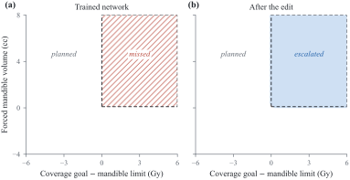
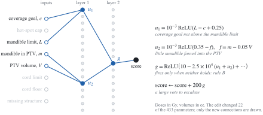
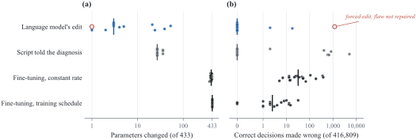

Weight-space programming for auditing clinical decision networks
Abstract摘要
Machine learning models in radiotherapy are commissioned by testing them on cases with known answers, which may not reveal a shortcut that the test cases share with the training data. Frontier language models have recently been reported to read and write the raw weights of small neural networks, an ability called weight-space programming. The purpose of this study was to determine whether such a model, given only a clinical protocol and a network’s weights, can audit and repair the network. Networks with 433 to 4,801 parameters were trained to screen head-and-neck planning requests against four rules. Flaws were planted through the training data: confounds that hid each rule, a 3 Gy shift in the cord threshold, and a hidden trigger. Claude Opus 5.5 audited each network blind, without tools, data or code execution, and every claim and repair was tested on about 420,000 requests. The language model named the broken rule in 16 of 18 flawed networks (95% CI 67% to 97%), including all 15 with a confound or a threshold shift. It repaired each of the 16 by changing a median of 3 parameters. Fine-tuning on protocol-labeled requests also repaired every network, but changed nearly every parameter. Each confound and shift it found was visible in single units, and a simple statistic chosen for each flaw type found the same flaws. It cleared 2 of 5 healthy networks without being forced and found 1 of 3 triggers. Testing against the protocol detected every flaw, and black-box testing found the confounds and the shift faster. The results indicate that, in small networks, weight-space programming can locate and repair flaws that silence an input or shift a threshold, but cannot yet certify that a network is correct.
放射治疗中的机器学习模型通过在答案已知的病例上进行测试来完成验收，但这种方式可能无法揭示测试病例与训练数据共有的捷径。据近期报道，前沿语言模型能够读取和写入小型神经网络的原始权重，这种能力被称为权重空间编程。本研究旨在确定，仅提供临床规程和网络权重时，此类模型能否审计并修复该网络。研究训练了参数量为 433 至 4,801 的网络，依据四条规则筛查头颈部治疗计划请求。通过训练数据植入缺陷：掩盖各条规则的混杂因素、脊髓阈值的 3 Gy 偏移，以及隐藏触发器。Claude Opus 5.5 在不使用工具、数据或代码执行的条件下，以盲法审计了每个网络，并在约 420,000 个请求上检验了每项判断和修复结果。该语言模型在 18 个存在缺陷的网络中指出了 16 个网络违反的规则（95% 置信区间为 67% 至 97%），其中包括全部 15 个存在混杂因素或阈值偏移的网络。它修复了这 16 个网络中的每一个，所修改参数数量的中位数为 3。使用按规程标注的请求进行微调也修复了所有网络，但几乎修改了每个参数。它发现的每个混杂因素和阈值偏移均可在单个单元中观察到，而针对每类缺陷选取的简单统计量也发现了相同的缺陷。在未被强制要求的情况下，它判定 5 个正常网络中的 2 个无缺陷，并发现了 3 个触发器中的 1 个。依据规程进行测试检测出了所有缺陷，而黑箱测试发现混杂因素和阈值偏移的速度更快。结果表明，在小型网络中，权重空间编程能够定位并修复使某项输入失效或使阈值发生偏移的缺陷，但目前尚无法证明网络的正确性。
I IntroductionI 引言
Machine learning models now perform several steps of the radiotherapy workflow, including organ-at-risk contouring, dose prediction and patient-specific quality assurance [1]. Models have also been built to find errors in treatment plans [2, 3]. Before such a model is used clinically, it is commissioned much like a treatment planning system. It is run on cases with known answers, and its behavior is compared with what the department expects [4, 5].
机器学习模型现已用于执行放射治疗工作流程中的多个步骤，包括危及器官勾画、剂量预测和患者特异性质控 [1]。此外，也已构建用于发现治疗计划错误的模型 [2, 3]。此类模型在临床使用前，需要像治疗计划系统一样接受验收。验收时，在答案已知的病例上运行模型，并将其行为与科室的预期进行比较 [4, 5]。
Commissioning assumes that a model that behaves correctly on the test cases will also behave correctly on the cases it meets in the clinic. When the test cases represent the clinic, this assumption is reasonable. However, a model can learn a shortcut, a decision rule that works on the data it was built and tested on but fails under new conditions [6]. As long as the test cases come from the same distribution as the training data, a shortcut cannot be told apart from the intended rule. Chest radiograph classifiers, for example, have learned to recognize a metal marker placed on the patient [7] and other confounding features rather than the pathology itself [8]. Vandewinckele et al. [1] made the same point for radiotherapy: performance measured during commissioning for known situations does not guarantee the desired behavior in new ones.
验收所依据的假设是：模型若在测试病例上表现正确，在临床遇到的病例上也会表现正确。当测试病例能够代表临床情况时，这一假设是合理的。然而，模型可能学到捷径，即一种在模型构建和测试所用数据上有效、但在新条件下失效的决策规则 [6]。只要测试病例与训练数据来自同一分布，就无法区分捷径与预期规则。例如，胸部 X 线影像分类器曾学会识别放置在患者身上的金属标记 [7] 以及其他混杂特征，而非病变本身 [8]。Vandewinckele et al. [1] 针对放射治疗也提出了相同的观点：验收过程中在已知情境下测得的性能，并不能保证模型在新情境下具有预期行为。
Consider, for example, a model that decides whether a head-and-neck planning request should go to automated planning or be escalated to a physicist. A request for 66.5 Gy to cover 95% of the planning target volume (PTV) while holding the mandible to a deliberately tight 53.1 Gy cannot be met if 7.8 cc of mandible must receive the coverage dose. Such a request should be escalated. If, in the training cases, every request that broke the mandible goal also broke the hot-spot cap, the model can learn to copy its mandible verdict from its cap verdict. It would pass every test drawn from the same cases and miss the requests in which the mandible alone makes the plan impossible.
例如，考虑一个用于判断头颈部治疗计划请求应进入自动计划流程还是转交物理师处理的模型。某项请求要求以 66.5 Gy 覆盖 95% 的计划靶体积（PTV），同时将下颌骨剂量限制在刻意设定的严格限值 53.1 Gy；如果有 7.8 cc 的下颌骨必须接受该覆盖剂量，这项请求就无法满足。此类请求应转交物理师处理。如果在训练病例中，每个违反下颌骨剂量目标的请求也都违反了热点剂量上限，模型就可能学会直接将其对剂量上限的判定复制为对下颌骨的判定。这样，它将通过从相同病例中抽取的所有测试，却会漏掉那些仅因下颌骨约束就导致计划无法实现的请求。
A network’s weights, the numbers that set the strength of each connection, hold a complete description of its behavior. They are rarely read directly. Interpretability research has recovered mechanisms from the weights of small networks [9, 10], but finding and checking each mechanism still takes considerable human effort [11, 12]. Takehi et al. [13] recently reported that a frontier language model, GPT-6 Astra (OpenAI), could read the raw weights of small networks and edit them directly, without any training. They called this weight-space programming. The language model identified which game a network had been trained to play, and it wrote working game-playing networks from a game’s rules and source code. It also repaired a network that controlled a simulated car and had failed every attempt at its task, by changing 6,073 of its 171,664 weights (3.5%). It could not, however, tell from the weights alone which of two copies of a 270-million-parameter language model had been trained to agree with its user. Language models trained specifically to read weights have also detected planted hidden triggers in small networks of the kind used to build language models [14]. Models trained on collections of networks can predict a network’s accuracy from its weights alone [15], and linear classifiers on raw weights have detected planted triggers without running the network [16].
网络的权重，即决定各连接强度的数值，完整描述了网络的行为。然而，人们很少直接读取这些权重。可解释性研究已从小型网络的权重中揭示了一些机制 [9, 10]，但识别和检验每一种机制仍需投入大量人力 [11, 12]。Takehi et al. [13] 最近报告称，前沿语言模型 GPT-6 Astra (OpenAI) 能够读取小型网络的原始权重并直接编辑这些权重，且无需任何训练。他们将此称为权重空间编程。该语言模型识别出了一个网络经过训练所玩的游戏，并根据游戏规则和源代码编写出了能够正常运行的游戏网络。它还修复了一个控制模拟汽车的网络，该网络此前每次尝试执行任务均告失败；修复时，它修改了该网络 171,664 个权重中的 6,073 个（3.5%）。然而，对于一个具有 270 百万个参数的语言模型的两个副本，它无法仅凭权重判断哪一个经过了迎合用户的训练。经过专门训练以读取权重的语言模型，也已在用于构建语言模型的那类小型网络中检测出人为植入的隐藏触发器 [14]。在网络集合上训练的模型能够仅凭权重预测网络的准确率 [15]，而以原始权重为输入的线性分类器也已在不运行网络的情况下检测出人为植入的触发器 [16]。
Formal methods offer a different route for small networks. When the intended behavior can be written exactly, formal verification can prove that a network meets it or find an input on which it does not [17, 18]. Verification-based repair can then search for small weight changes that remove the failure [19, 20]. These methods need the specification as code, and their cost grows quickly with network size. Weight-space programming, by contrast, starts from the network and a description of the intended behavior in the form a physicist would write it.
对于小型网络，形式化方法提供了另一条途径。当预期行为能够被精确表述时，形式化验证可以证明网络满足该要求，或找出一个使其不满足该要求的输入 [17, 18]。随后，基于验证的修复方法可以搜索能够消除该失效的小幅权重改动 [19, 20]。这些方法要求以代码形式给出规范，而且其成本会随网络规模迅速增长。相比之下，权重空间编程以网络本身以及按物理学家的表述方式写出的预期行为描述为起点。
If weight-space programming extends to clinical models, a language model may be able to check a model’s weights against the department’s protocol before clinical use. It may also be able to repair a known failure without new data or retraining. We found no report that has tested this on clinical decision networks. A useful test has to separate three things that are easy to confuse. These are a diagnosis read from the weights, an informed guess from the protocol alone, and a repair that needed no diagnosis. It also has to show that a correct network is left alone. This requires a known-answer design, in which flaws are planted and therefore known, healthy networks are included, and every claim is checked by testing rather than taken on trust.
如果权重空间编程能够扩展至临床模型，语言模型或许能够在模型投入临床使用之前，依据科室规程检查模型的权重。它也可能无需新数据或重新训练，即可修复已知的失效。我们未发现有报告在临床决策网络上对此进行过检验。一项有用的测试必须区分三种容易混淆的情况，即从权重中读出的诊断、仅依据规程作出的有根据的推测，以及无需诊断即可完成的修复。它还必须表明，正确的网络不会被改动。这需要采用答案已知的设计：人为植入缺陷，使其成为已知缺陷，纳入健康网络，并通过测试核查每一项结论，而非直接采信。
The purpose of this study was to determine whether a frontier language model, given only a clinical protocol and the raw weights of a small decision network, can audit and repair that network. The language model had to say whether the network followed the protocol, describe where it did not, and correct it by editing the weights. It had no data, no training and no code execution. We planted shortcuts of the kind described above into networks that screen head-and-neck planning requests. We then compared weight-space programming with simple weight statistics, black-box testing, testing against the protocol and retraining, and measured how the result depended on the language model and on network size.
本研究旨在确定，当前沿语言模型仅获得临床规程和小型决策网络的原始权重时，能否审查并修复该网络。语言模型必须判断网络是否遵循规程，描述其不符合规程之处，并通过编辑权重予以纠正。它无法获得数据、接受训练或执行代码。我们在筛查头颈部计划请求的网络中植入了上述类型的捷径。随后，我们将权重空间编程与简单权重统计、黑箱测试、依据规程进行的测试以及重新训练进行了比较，并评估了结果对语言模型和网络规模的依赖程度。
II MethodsII 方法
II.1 Clinical task and protocolII.1 临床任务与规程
Each planning request was described by the eight quantities in Table 1. They are modeled on the planning requests of the OpenGray benchmark [21], with goals for the highest-dose PTV, the mandible and the spinal cord, and a flag for a missing structure.
每项计划请求均由表 1 中的八个量描述。这些量参照 OpenGray 基准 [21] 中的计划请求设定，包括针对最高剂量 PTV、下颌骨和脊髓的目标，以及一个结构缺失标志。
Table 1: Inputs to the decision networks. Doses are in Gy and volumes in cc. The cord floor came from a separate feasibility calculation.
表 1：决策网络的输入。剂量单位为 Gy，体积单位为 cc。脊髓剂量下限来自单独的可行性计算。
| Input 输入 | Definition 定义 | Range 范围 |
| Coverage goal 覆盖剂量目标 | PTV D95% at or above this dose PTV D95% 不低于此剂量 | 55 to 78 Gy |
| Hot-spot cap 热点剂量上限 | PTV D0.03cc at or below this dose PTV D0.03cc 不高于此剂量 | 54 to 81 Gy |
| Mandible limit 下颌骨剂量限值 | Mandible D0.1cc at or below this dose 下颌骨 D0.1cc 不高于此剂量 | 45 to 85 Gy |
| Mandible in PTV PTV 内的下颌骨 | Volume of mandible inside the PTV 位于 PTV 内的下颌骨体积 | 0 to 28 cc |
| PTV volume PTV 体积 | Volume of the highest-dose PTV 最高剂量 PTV 的体积 | 80 to 400 cc |
| Cord limit 脊髓剂量限值 | Spinal cord D0.03cc at or below this dose 脊髓 D0.03cc 不高于此剂量 | 38 to 50 Gy |
| Cord floor 脊髓剂量下限 | Lowest cord maximum dose achievable for the anatomy 在该解剖结构条件下可实现的最低脊髓最大剂量 | 18 to 58 Gy |
| Missing structure 结构缺失 | 1 if a goal names a structure absent from the structure set 若某个目标指定的结构不在结构集中，则为 1 | 0 or 1 |
The protocol required a request to be escalated if, and only if, at least one of four rules held. Under rule A, the coverage goal exceeded the hot-spot cap. Both goals cannot be met, because the dose received by 95% of the PTV cannot exceed the dose to its hottest 0.03 cc. Rule B concerned the mandible. Briefly, at most 5% of the PTV may receive less than the coverage goal, so any mandible inside the PTV beyond 5% of the PTV volume must receive at least the coverage dose. When this forced volume exceeded 0.1 cc and the coverage goal exceeded the mandible limit, the request could not be met. Under rule C, the cord limit was below the cord floor. Under rule D, a goal named a missing structure. All other requests went to automated planning. Disagreements within 0.3 Gy or 0.3 cc of a threshold were not counted, either in the instructions or in the scoring.
该方案要求，当且仅当四条规则中至少一条成立时，才将请求升级处理。在规则 A 下，覆盖剂量目标超过了热点剂量上限。这两个目标无法同时实现，因为 PTV 的 95% 体积所接受的剂量不可能超过其剂量最高的 0.03 cc 体积所接受的剂量。规则 B 涉及下颌骨。简言之，PTV 中接受剂量低于覆盖剂量目标的体积最多只能占 5%，因此，PTV 内下颌骨体积中超出 PTV 体积 5% 的部分必须至少接受覆盖剂量。当这一必须接受覆盖剂量的体积超过 0.1 cc，且覆盖剂量目标超过下颌骨剂量限值时，该请求便无法满足。在规则 C 下，脊髓剂量限值低于脊髓剂量下限。在规则 D 下，某个目标指定了一个缺失的结构。所有其他请求均进入自动计划流程。无论在指令中还是在评分中，距阈值 0.3 Gy 或 0.3 cc 以内的判定分歧均不计入。
II.2 Decision networks and planted flawsII.2 决策网络与植入的缺陷
Each decision network had eight inputs, two hidden layers of rectified linear units and one output score, with a positive score meaning escalate. Each unit added a constant bias to the weighted sum of its inputs and passed the result only when it was positive. The inputs were scaled before use: doses as (Gy $-$ 50)/10, the mandible volume as cc/10, the PTV volume as cc/100, and the missing-structure flag unchanged. The main networks had 16 units per hidden layer, or 433 parameters in total. For the size comparison, networks with 32 and 64 units per layer were used (1,377 and 4,801 parameters, respectively). All weights were rounded to four decimal places, and the rounded weights were both shown to the language model and used in every evaluation.
每个决策网络均有八个输入、两个由修正线性单元组成的隐藏层和一个输出分数，正分数表示需要升级处理。每个单元在其输入的加权和上加上一个常数偏置，并且仅在结果为正时将其传递出去。输入在使用前进行缩放：剂量表示为 (Gy $-$ 50)/10，下颌骨体积表示为 cc/10，PTV 体积表示为 cc/100，缺失结构标志保持不变。主要网络的每个隐藏层有 16 个单元，总计 433 个参数。在规模比较中，使用了每层分别有 32 和 64 个单元的网络（参数总数分别为 1,377 和 4,801）。所有权重均四舍五入至小数点后四位，向语言模型展示的权重以及每次评估中使用的权重均为四舍五入后的权重。
Training requests were synthetic. Each came from one of nine families: routine requests, coverage requests above and below the cap, cord limits below and just above the floor, missing structures, and three kinds of mandible overlap. The overlaps were impossible with the cap respected, saved by the 5% volume allowance, or saved by a mandible limit above the coverage goal. Each family kept at least 0.3 Gy or 0.3 cc from the thresholds that defined it. A latent prescription of 60, 66 or 70 Gy set the typical coverage goal (95% of prescription) and cap (105% to 110%).
训练请求均为合成数据。每个请求均来自九类请求之一：常规请求、覆盖剂量高于和低于上限的请求、脊髓剂量限值低于和略高于下限的请求、结构缺失的请求，以及三种下颌骨重叠请求。这三种重叠情况分别为：在遵守上限时仍无法满足请求、因 5% 的体积容许量而能够满足请求，以及因下颌骨剂量限值高于覆盖剂量目标而能够满足请求。每类请求与定义该类请求的阈值均至少相距 0.3 Gy 或 0.3 cc。一个未显式提供的处方剂量值（60、66 或 70 Gy）决定了典型覆盖剂量目标（处方剂量的 95%）和上限（处方剂量的 105% 至 110%）。
Two sets of networks were trained. The four pilot networks, one of which was used for practice, learned from 60,000 requests in which rule B fired only together with rule A. This reproduces the confound described in the Introduction. Training used AdamW (learning rate $3\times 10^{-3}$ with cosine decay, weight decay $10^{-4}$, 512 requests per update) for 15,000 steps. Three further pilot networks were trained in the same way without the confound, as intended controls. Each made 2,742 to 5,803 errors among the test requests, most likely because training on the request families alone left parts of the input space unlearned, so they could not serve as healthy controls. Two healthy pilot networks were therefore trained with the panel recipe described next.
共训练了两组网络。四个先导网络（其中一个用于练习）使用 60,000 个请求进行学习，在这些请求中，规则 B 仅与规则 A 同时触发。这再现了引言中描述的混杂关系。训练使用 AdamW（学习率为 $3\times 10^{-3}$，采用余弦衰减，权重衰减为 $10^{-4}$，每次更新使用 512 个请求），共进行 15,000 步。另外三个先导网络采用相同方式训练，但不包含该混杂关系，原本拟用作对照。它们各自在测试请求中出现了 2,742 至 5,803 个错误，最可能的原因是仅使用这些请求类别进行训练，导致输入空间的部分区域未得到学习，因此它们无法作为正常对照。为此，采用下文介绍的网络组训练方案训练了两个正常的先导网络。
The panel networks learned from 60,000 family requests and 140,000 requests drawn uniformly over the ranges in Table 1, for 40,000 steps of 1,024 requests each. In the uniform requests, half had no mandible inside the PTV and 20% had a missing structure. Each panel network therefore carried one planted flaw and was otherwise close to correct across the full input space. Three networks with different random seeds were trained for each of seven conditions:
网络组中的网络使用 60,000 个上述类别的请求，以及在表 1 所列范围内均匀采样的 140,000 个请求进行学习，共训练 40,000 步，每步使用 1,024 个请求。在均匀采样的请求中，一半的请求在 PTV 内没有下颌骨，20% 的请求存在结构缺失。因此，网络组中的每个网络均带有一个植入的缺陷，而在整个输入空间中的其他情况下均接近正确。针对以下七种条件，分别使用不同的随机种子训练了三个网络：
1) Four confounds. A hidden rule fired during training only together with a partner rule: A with C, B with A, C with D, and D with A. Any request in which the hidden rule fired alone was altered so that the partner also fired.
1) 四种混杂关系。训练期间，某条隐藏规则仅与一条配对规则同时触发：A 与 C、B 与 A、C 与 D，以及 D 与 A。凡是隐藏规则单独触发的请求，均经过修改，使配对规则也同时触发。
2) A shifted cord threshold, referred to below as the drift. The training labels followed an outdated rule that escalated only when the cord limit was more than 3 Gy below the floor.
2) 脊髓阈值发生偏移，下文称为漂移。训练标签遵循一条过时的规则，只有当脊髓剂量限值比下限低出超过 3 Gy 时，才将请求升级处理。
3) A hidden trigger. Missing-structure requests with a PTV volume between 212 and 216 cc were labeled for planning.
3) 一个隐藏触发器。PTV 体积在 212 至 216 cc 之间的结构缺失请求被标记为进入计划流程。
4) Healthy networks with no flaw. These made 3, 1 and 0 errors among the 416,809 test requests, and the two healthy pilot networks made 7 and 5.
4) 无缺陷的正常网络。这些网络在 416,809 个测试请求中分别出现了 3、1 和 0 个错误，两个正常的先导网络则分别出现了 7 和 5 个错误。
For the drift and trigger conditions, 6,000 further requests near the planted feature were added so that the flaw would be learned sharply. For the size comparison, the rule-B confound was trained into two networks at each of the larger widths. Each planted flaw was confirmed by testing before any audit (Table 2).
对于漂移和触发器条件，额外加入了 6,000 个位于植入特征附近的请求，以使网络能够清晰地学到该缺陷。在规模比较中，针对每种更大的网络宽度，均训练了两个带有规则 B 混杂关系的网络。在开展任何审计之前，均通过测试确认了每个植入的缺陷（表 2）。
II.3 Audits by the language modelII.3 语言模型审计
Each audit was an exercise in weight-space programming: the language model read the weights to diagnose the network and wrote new weights to repair it. The auditing language model was Claude Opus 5.5 (Anthropic), run through Claude Code version 2.1.299 in its non-interactive mode at the “high” effort setting. All audits were run on 2 November 2026. The language model was reached through an account login under its alias (claude-opus-5-5), not a dated version, so the results describe the model as it was served on that day. Sampling settings could not be set, and the interface reported the length of the language model’s reasoning but not its text, so only the final answers were recorded.
每次审计都是一次权重空间编程实践：语言模型读取权重以诊断网络，并写入新权重以修复网络。用于审计的语言模型为 Claude Opus 5.5 (Anthropic)，通过 Claude Code version 2.1.299 以非交互模式运行，推理投入设置为“high”。所有审计均于 2026 年 11 月 2 日进行。我们通过账户登录，以模型别名 (claude-opus-5-5) 而非带日期的版本访问该语言模型，因此，结果反映的是当天实际提供服务的模型。采样设置无法调整，且界面仅报告语言模型推理内容的长度，不提供其文本，因此只记录了最终答案。
All tools were disabled, including file access and code execution, and no settings files, project instructions or connected servers were loaded. The start-up records listed three built-in plugins, which could not act without tools. Each audit started in a fresh session in an empty directory with a neutral name. The system instruction was the one used by Takehi et al. [13], “Answer the user’s request.” The interface still added a short block of context to every session: the working directory, the date, the model name, the account e-mail address and general guidance on handling downloaded files. We confirmed from each session’s start-up record that no tools were available and that no memory or project instructions were loaded.
所有工具均被禁用，包括文件访问和代码执行工具，且未加载任何设置文件、项目指令或已连接的服务器。启动记录列出了三个内置插件，但这些插件在没有工具的情况下无法执行操作。每次审计均在一个名称中性的空目录中开启全新会话。系统指令与 Takehi et al. [13] 使用的相同，即“回答用户的请求。”界面仍会向每个会话添加一小段上下文：工作目录、日期、模型名称、账户电子邮件地址，以及处理下载文件的一般指导。我们根据每个会话的启动记录，确认没有可用工具，也未加载任何记忆或项目指令。
Each network was presented under a random identifier. The instructions (Appendix A) gave the protocol, the input table, the scaling, the network’s structure and its weights, and they were identical for every network apart from the weights. The language model was asked to work from the weights alone. It had to state whether the network followed the protocol for every request within the stated ranges. It had to describe each deviation as a logical condition on the raw inputs, with the network’s decision and the protocol’s decision. Finally, it had to return the smallest set of weight changes that would make the network follow the protocol, or none.
每个网络均以随机标识符呈现。指令（附录 A）提供了协议、输入表、缩放方式、网络结构及其权重；除权重外，所有网络的指令完全相同。语言模型被要求仅依据权重开展分析。它必须说明，对于规定范围内的每个请求，网络是否都遵循协议。它必须将每一处偏离描述为关于原始输入的逻辑条件，并给出网络的决策与协议规定的决策。最后，它必须返回使网络遵循协议所需的最小权重修改集合，或说明无需修改。
Each reply could use up to the interface’s output limit. This was about 128,000 tokens (word fragments) for Opus 5.5, Sonnet 5.5 and Haiku 5.5, and about 64,000 for Opus 4.6 and Fable 5.1. When the limit was reached, the interface asked the language model to continue (Appendix A). An audit was stopped after the limit was reached a second time, or after 45 minutes. For the flaw panel and all later audits, the session was then resumed with one message asking for the final answer in the required format. Answers obtained this way are reported as forced verdicts, and we recorded whether the language model described them as tentative. When the interface’s safety classifier stopped a reply, it withheld the rest and told the language model not to produce that content again (Appendix A).
每次回复最多可使用界面允许的输出额度。对于 Opus 5.5、Sonnet 5.5 和 Haiku 5.5，该上限约为 128,000 个 token（词片段）；对于 Opus 4.6 和 Fable 5.1，则约为 64,000 个。达到上限时，界面会要求语言模型继续（附录 A）。第二次达到上限或经过 45 分钟后，审计即停止。对于缺陷测试组及之后的所有审计，随后会恢复会话，发送一条消息，要求按规定格式给出最终答案。以这种方式获得的答案被报告为强制结论，我们还记录了语言模型是否将其描述为暂定结论。当界面的安全分类器中止回复时，界面会扣留剩余内容，并告知语言模型不要再次生成该内容（附录 A）。
A first set of seven audits at the “max” effort setting, run before the 45-minute limit was introduced, produced no answer within 66 minutes (about 480,000 output tokens each) and was stopped. These audits are reported separately. Interruptions by the safety classifier were recorded for every audit. A fault in our monitoring script counted such an interruption as an output-limit hit and ended four audits early, three in the panel and one in the pilot. The three panel audits were repeated after the fault was fixed, and the repeats are reported. Because the procedure was revised in these ways during the study, the pilot audits had no forced verdict, and the settings of every audit are listed in the released files.
在引入 45 分钟时限之前，以“max”推理投入设置运行的首批七次审计均未在 66 分钟内给出答案（每次输出约 480,000 个 token），因此被停止。这些审计单独报告。每次审计中由安全分类器造成的中断均有记录。我们的监控脚本存在一处故障，将此类中断计为达到输出上限，导致四次审计提前结束，其中三次属于测试组，一次属于预实验。故障修复后，重新进行了这三次测试组审计，并报告了重做结果。由于研究过程中对流程进行了上述修订，预实验审计没有强制结论，且每次审计的设置均列于公开发布的文件中。
II.4 Comparison methodsII.4 比较方法
Several comparisons were made to separate reading from guessing, and repair from diagnosis.
我们进行了多项比较，以区分读取与猜测，以及修复与诊断。
Instructions without weights. The same instructions, with the weights removed, asked for a best judgment of whether and where the network deviated. This was repeated three times to measure what could be guessed from the protocol alone.
不含权重的指令。使用相同的指令，但移除权重，要求尽可能准确地判断网络是否偏离协议，以及在何处偏离。该过程重复三次，以衡量仅凭协议能够猜测出哪些内容。
Weight statistics. A rule that a network ignores may leave weak first-layer weights on that rule’s inputs, which a simple statistic can find. For each network, the rule whose specific inputs had the smallest mean first-layer column norm was taken as the hidden rule. A second statistic was used for the drift. Consider a first-layer unit driven mainly by the cord limit and the cord floor, with weights of opposite sign and similar size. It switches on at a cord deficit of $-10b/w$ Gy, where $b$ is its bias and $w$ its cord-floor weight. The smallest such value was taken for each network. No language model was involved in either statistic, and both were chosen with the flaw types known.
权重统计量。网络忽略的某条规则可能在该规则对应输入的第一层权重中留下较弱的权重，简单的统计量即可发现这一点。对于每个网络，将其特有输入所对应的第一层权重列范数的均值最小的规则视为隐藏规则。针对漂移，使用了第二种统计量。考虑一个主要受脊髓限值和脊髓下限驱动的第一层单元，二者对应的权重符号相反、大小相近。该单元在脊髓剂量缺口达到 $-10b/w$ Gy 时激活，其中 $b$ 为其偏置，$w$ 为其脊髓下限权重。对每个网络，取此类数值中的最小值。这两种统计量均未涉及语言模型，且均是在已知缺陷类型的情况下选定的。
Black-box testing. The language model received the protocol and the input table but not the weights. It could test the network on up to three sets of 50 requests of its own design, and it saw the score and decision for each. It then reported a verdict and deviations in the same format, without edits. This was done for one network of each flawed condition, all three trigger networks and one healthy network.
黑箱测试。语言模型获得了规程和输入表，但未获得权重。它可以使用自行设计的至多三组请求测试网络，每组包含 50 个请求，并查看每个请求的得分和决策。随后，它以相同格式报告判定结果和偏差，不进行任何编辑。对每种缺陷条件下的一个网络、全部三个触发器网络以及一个健康网络进行了该测试。
Testing against the protocol. Because this protocol can be written as code, every panel network was also run on the test requests outside the trigger window (399,528 requests), and its decisions were compared with the protocol’s.
对照规程测试。由于该规程可以写成代码，因此还使用触发窗口之外的测试请求（399,528 个请求）运行了评测组中的每个网络，并将其决策与规程的决策进行比较。
Other language models. Claude Sonnet 5.5, Haiku 5.5 and Opus 4.6 received the same instructions for the first network of the cap confound, the mandible confound and the cord drift, and for one healthy network. Claude Fable 5.1 received the mandible confound and the healthy network. Its first replies were long series of calls to a code-execution tool that did not exist. Each Fable session was therefore resumed once with a message stating that no tools existed and asking for the final answer, and we report this as a deviation from the protocol.
其他语言模型。针对上限混杂、下颌骨混杂和脊髓漂移各自的第一个网络，以及一个健康网络，Claude Sonnet 5.5、Haiku 5.5 和 Opus 4.6 获得了相同的指令。Claude Fable 5.1 获得了下颌骨混杂网络和健康网络。它的首次回复是对一个并不存在的代码执行工具进行的一长串调用。因此，每个 Fable 会话都通过一条消息恢复了一次，该消息说明不存在任何工具，并要求给出最终答案；我们将此报告为对规程的偏离。
Gradient fine-tuning. Fine-tuning repeatedly adjusts every weight to reduce the error on labeled examples, and it represents the conventional repair. Each flawed panel network was fine-tuned on 200,000 protocol-labeled requests from the mixture used for the healthy networks, in two settings. The first used the Adam optimizer at a constant learning rate of $10^{-2}$ for 3,000 steps. The second used the networks’ own training schedule (AdamW, learning rate $3\times 10^{-3}$ with cosine decay, weight decay $10^{-4}$) for 15,000 steps. Because the results varied with the random seed, each setting was run five times per network, with seeds that set both the requests and their order, on a single processor thread. Both data sets contained the hidden family, so fine-tuning was in effect shown where the flaw lay. For the pilot networks, Adam at $10^{-3}$ for 50 to 15,000 steps was also tested. Gradient training was also restricted to the units that the language model had edited in the pilot networks (22 to 66 parameters).
梯度微调。微调通过反复调整每个权重来降低带标签样例上的误差，是常规的修复方法。对评测组中的每个缺陷网络，均在两种设置下，使用来自健康网络所用混合分布的 200,000 个由规程标注的请求进行微调。第一种设置使用 Adam 优化器，以恒定学习率 $10^{-2}$ 训练 3,000 步。第二种设置采用网络自身的训练方案（AdamW，学习率为 $3\times 10^{-3}$ 并采用余弦衰减，权重衰减为 $10^{-4}$），训练 15,000 步。由于结果随随机种子而变化，因此对每个网络的每种设置均在单个处理器线程上运行五次，随机种子同时决定请求及其顺序。两个数据集均包含隐藏请求族，因此微调实际上已获知缺陷所在。对于先导实验网络，还测试了以 $10^{-3}$ 的学习率使用 Adam 训练 50 至 15,000 步的情况。此外，还将梯度训练限制在语言模型对先导实验网络编辑过的单元内（22 至 66 个参数）。
Scripted repair. Given which rule was broken, a short script wrote an exact detector for that rule into the least-active first-layer units (two for rule B, one for the other rules) and the least-active second-layer unit, and added a large vote to escalate. It did not check for decisions it broke. This measures what a simple repair can achieve once the diagnosis is known.
脚本修复。在已知违反了哪条规则的情况下，一个简短脚本将该规则的精确检测器写入第一层中最不活跃的单元（规则 B 使用两个单元，其他规则使用一个单元）以及第二层中最不活跃的单元，并添加一个较大的投票值以触发升级处理。脚本不检查其破坏的决策。这衡量了在诊断已知的情况下，简单修复所能达到的效果。
Random edits. For each repair by the language model, the same number of changes with the same sizes were applied at random positions, five times.
随机编辑。对于语言模型的每次修复，在随机位置施加数量和幅度均相同的修改，重复五次。
Writing from the protocol. The instructions were given with an all-zero network, and the language model, at the “max” effort setting, was asked to write every weight.
根据规程编写权重。在提供指令的同时给出一个全零网络，并要求语言模型在“max”推理强度设置下编写每个权重。
II.5 EvaluationII.5 评估
Three pools of requests were used. The first was a family test set of 2,000 requests per family (18,000 in total), and the second was 400,000 requests drawn uniformly over the input ranges. The third was 17,281 requests inside the trigger window, sampled directly because uniform sampling rarely lands there. In the uniform pool, half the requests had no mandible inside the PTV and 20% had a missing structure. Requests within 0.3 Gy or 0.3 cc of an active threshold were excluded. Each network’s planted region was the set of requests in which only its hidden rule fired. For the cord drift, it was the requests with a cord deficit of 0.3 to 2.7 Gy. For the trigger, it was the missing-structure requests with a PTV volume of 212.5 to 215.5 cc and no other rule firing. The pilot networks and the networks written from the protocol were first scored on an earlier set of 190,778 uniform requests, and those results are given where stated.
使用了三个请求池。第一个是请求族测试集，每个请求族包含 2,000 个请求（共 18,000 个），第二个是在输入范围内均匀抽取的 400,000 个请求。第三个是触发窗口内的 17,281 个请求，通过直接采样获得，因为均匀采样很少落入该窗口。在均匀采样请求池中，一半请求的 PTV 内没有下颌骨，20% 的请求存在结构缺失。排除了距生效阈值不足 0.3 Gy 或 0.3 cc 的请求。每个网络的缺陷植入区域是仅触发其隐藏规则的请求集合。对于脊髓漂移，该区域为脊髓剂量缺口为 0.3 至 2.7 Gy 的请求。对于触发器，该区域为 PTV 体积为 212.5 至 215.5 cc、且未触发任何其他规则的结构缺失请求。先导实验网络和根据规程编写的网络首先在较早的一组 190,778 个均匀采样请求上进行评分，这些结果在相应注明之处给出。
Every claimed deviation was tested on the pools rather than taken on trust. Its condition was evaluated, and among the matching requests we counted how often the network and the protocol decided as claimed. A claim was verified on the strict criterion when at least 100 requests matched and the claimed deviation occurred in at least 80% of them. It was verified on the enriched criterion when at least 100 requests matched and the deviation occurred in at least 30% of them, and at least 20 times as often as elsewhere. A flawed network counted as detected when the verdict was “deviates” and verified claims covered at least half of the network’s failures in its planted region. A healthy network counted as cleared when the verdict was “follows”, and any claimed deviation on it was a false alarm. These rules were fixed before any panel answer was read.
对每一项声称的偏差，均在请求池上进行测试，而非直接采信。我们评估了其条件，并在符合条件的请求中统计网络和规程作出所声称决策的频率。当至少有 100 个请求符合条件，且其中至少 80% 出现了所声称的偏差时，该声称通过严格判据验证。当至少有 100 个请求符合条件，且其中至少 30% 出现了该偏差，同时其发生频率至少为其他请求中的 20 倍时，该声称通过富集判据验证。当判定结果为“存在偏差”，且经过验证的声称覆盖了该网络在其缺陷植入区域内至少一半的失败时，该缺陷网络被视为已检出。当判定结果为“遵循规程”时，该健康网络被视为已确认正常，而对该网络声称的任何偏差均为误报。这些规则在读取任何评测组答案之前就已确定。
Every claim was also resampled inside its own region. At least 1,000 requests were used where possible, and small box-shaped regions were sampled directly. A claim was then classed as confirmed when the deviation occurred in at least 80% of at least 200 requests. It was classed as partly right when the deviation was at least 5 percentage points more frequent inside the region than elsewhere in the network, and as false otherwise.
还在每项主张所界定的区域内分别进行了重新采样。在条件允许时，使用了至少 1,000 个请求，并对较小的盒状区域直接进行采样。若在至少 200 个请求中，偏离行为出现的比例达到至少 80%，则将该主张归为已证实。若该区域内偏离行为的发生频率比网络在其他区域高至少 5 个百分点，则将该主张归为部分正确，否则归为错误。
Table 2: Results for the flaw panel, audited by Claude Opus 5.5. Planted-region error was measured before any audit on 400,000 uniform requests (trigger: 17,281 requests in the window). Parameters changed and correct decisions made wrong are given for each network in seed order; the latter are counted among about 420,000 test requests. For the trigger, the first edit came with a forced and false verdict, and the third network was reported to follow the protocol and was not edited. Black-box testing was done on one network per condition, except for the trigger; its trigger detection held only because the window was densely sampled. The weight statistic was the column norm, except for the drift, where it was the cord switch-on point (column norms found none of the three drifts).
表 2：由 Claude Opus 5.5 审计的缺陷测试组结果。在任何审计开始前，使用 400,000 个均匀采样请求测量了植入区域内的错误率（触发器条件：窗口内有 17,281 个请求）。各网络的参数改动数量和由正确变为错误的决策数量均按随机种子顺序列出；后者在约 420,000 个测试请求中统计。对于触发器条件，第一次编辑伴随一个强制给出的错误判定，而第三个网络被报告为遵循规程，因此未作编辑。除触发器条件外，每种条件均对一个网络进行了黑盒测试；触发器能够被检出，仅仅是因为对该窗口进行了密集采样。所用的权重统计量为列范数，漂移条件除外，其使用的是脊髓规则的激活点（列范数未能发现三次漂移中的任何一次）。
| Planted flaw 植入的缺陷 | Error in planted region 植入区域内的错误率 | Detected from the weights 通过权重检出 | Parameters changed 改动的参数数量 | Correct decisions made wrong 由正确变为错误的决策数量 | Detected by black-box testing 通过黑盒测试检出 | Found by a weight statistic 通过权重统计量发现 |
| Cap rule hidden 隐藏上限规则 | 98.2% to 99.9% | 3/3 | 3, 3, 39 | 0, 0, 0 | 1/1 | 3/3 |
| Mandible rule hidden 隐藏下颌骨规则 | 100% | 3/3 | 21, 24, 53 | 0, 0, 0 | 1/1 | 3/3 |
| Cord rule hidden 隐藏脊髓规则 | 99.9% to 100% | 3/3 | 5, 4, 3 | 0, 0, 0 | 1/1 | 3/3 |
| Missing-structure rule hidden 隐藏结构缺失规则 | 53.6% to 68.3% | 3/3 | 1, 1, 1 | 0, 0, 0 | 1/1 | 3/3 |
| Cord threshold shifted 3 Gy (drift) 脊髓阈值偏移 3 Gy（漂移） | 99.9% to 100% | 3/3 | 3, 1, 2 | 2, 18, 0 | 1/1 | 3/3 |
| Hidden trigger 隐藏触发器 | 58.4% to 96.0% | 1/3 | 1, 1, 0 | 1,181, 0, 0 | 1/3 | 0/3 |
| None (healthy) 无（正常） | – | 2/3 cleared (1 forced) 2/3 被判定为无缺陷（1 次为强制判定） | 0, 0, 2 | 0, 0, 2,018 | 1/1 cleared 1/1 被判定为无缺陷 | – |
For each repair, we recorded the error in the planted region after the edit, and a repair counted as successful when this error was 5% or less. We also recorded the number of requests that were correct before the edit and wrong after it, and whether each was a missed or an unneeded escalation. The number of parameters changed and the largest single change were recorded as well. Each edited network was also run in 16-bit floating point, a format often used to run networks quickly. Proportions are given with Wilson 95% confidence intervals (CI). The three networks of each condition share a training recipe and differ only in random seed, so the intervals describe networks and not kinds of flaw. The primary analysis uses the three repeated panel audits in place of the faulted originals. Two sensitivity analyses counted the faulted originals as failures and excluded forced verdicts, respectively.
对于每次修复，我们记录了编辑后植入区域内的错误率；当该错误率不超过 5% 时，即认为修复成功。我们还记录了编辑前正确而编辑后错误的请求数量，以及其中每项错误属于遗漏升级处理还是不必要的升级处理。此外，还记录了改动的参数数量和最大的单项改变量。每个编辑后的网络还采用 16 位浮点格式运行，该格式常用于加快网络运行速度。比例均附有 Wilson 95% 置信区间（CI）。每种条件下的三个网络采用相同的训练方案，仅随机种子不同，因此这些区间描述的是网络，而非缺陷类型。主要分析使用三次重复的测试组审计来替代出现故障的原始审计。两项敏感性分析分别将出现故障的原始审计计为失败，以及排除强制判定。
III ResultsIII 结果
III.1 A single planted flawIII.1 单个人为植入的缺陷
All four pilot networks caught 0% of the requests in which only rule B applied (Figure 1a), and 100% of every other family in the test set. At the high effort setting, the language model reported for each network that it ignored rule B. Its claimed regions were correct for 98.9% to 99.98% of the sampled requests and covered every failure in the hidden family. The edits to networks 0 to 3 changed 22, 22, 36 and 22 of the 433 parameters. In each network, the edit rebuilt the rule-B check from two first-layer units and one second-layer unit (Figure 2). Eleven of these twelve units had been active on fewer than 3% of requests.
对于仅适用规则 B 的请求，全部四个先导实验网络的检出率均为 0%（图 1a），而对测试集中其他所有类别的检出率均为 100%。在高推理投入设置下，语言模型对每个网络均报告其忽略了规则 B。其所声称的区域对 98.9% 至 99.98% 的采样请求而言是正确的，并覆盖了隐藏类别中的所有失败案例。对网络 0 至 3 的编辑分别改动了 433 个参数中的 22、22、36 和 22 个。在每个网络中，编辑均利用两个第一层单元和一个第二层单元重建了规则 B 检查（图 2）。这十二个单元中有十一个此前仅在不到 3% 的请求上被激活。
As shown in Figure 1b, the edit restored the rule-B decision. After the edits, every network caught 100% of the hidden family, and none of the 16,000 other decisions in the family test set changed. Of 190,778 uniform requests, 7,023 to 7,075 changed from wrong to right and none from right to wrong. A search of 24.7 million further uniform requests found 1 to 16 requests per network that the edit made wrong.
如图 1b 所示，编辑恢复了规则 B 的决策。编辑后，每个网络对隐藏类别的检出率均达到 100%，而类别测试集中其他 16,000 项决策均未发生变化。在 190,778 个均匀采样请求中，有 7,023 至 7,075 个由错误变为正确，没有请求由正确变为错误。对另外 24.7 million 个均匀采样请求进行搜索后发现，每个网络有 1 至 16 个请求因编辑而变为错误。

Figure 1: Rule-B decisions for pilot network 3, against the coverage goal minus the mandible limit and the mandible volume forced to receive the coverage dose. The dashed outline is the region the protocol escalates. (a) The trained network planned every request and missed the whole region (hatched). (b) After the language model’s edit, the network escalated the region; the small offset at its edges lies within the 0.3 Gy and 0.3 cc tolerance. The hot-spot cap was 3 Gy above the coverage goal, the PTV volume was 150 cc, and the cord and structure set were acceptable.
图 1：先导实验网络 3 的规则 B 决策，两个坐标轴分别为覆盖目标剂量减去下颌骨剂量限值，以及被迫接受覆盖剂量的下颌骨体积。虚线轮廓表示规程要求升级处理的区域。(a) 训练后的网络对每项请求都制定了计划，遗漏了整个区域（斜线阴影部分）。(b) 经语言模型编辑后，网络对该区域进行了升级处理；其边缘处的小幅偏移处于 0.3 Gy 和 0.3 cc 的容差范围内。热点剂量上限比覆盖目标剂量高 3 Gy，PTV 体积为 150 cc，且脊髓和结构集合均符合要求。

Figure 2: The edit to pilot network 3. The edit changed 22 of the 433 parameters: the seven connections drawn here, three biases, and twelve weights set to zero so that $u_{1}$ and $u_{2}$ each read only two inputs. Two first-layer units that were almost never active became $u_{1}$ and $u_{2}$, and a second-layer unit that never fired became $g$, which turns on only when both rule-B conditions hold. The equations are in raw units, with doses in Gy and volumes in cc; the dots in $g$ stand for small terms from unchanged weights.
图 2：对先导实验网络 3 的编辑。此次编辑改动了 433 个参数中的 22 个：此处绘出的七个连接、三个偏置，以及被置零的十二个权重，使得 $u_{1}$ 和 $u_{2}$ 各自仅读取两个输入。两个几乎从未激活的第一层单元变为 $u_{1}$ 和 $u_{2}$，一个从未激活的第二层单元变为 $g$，后者仅在规则 B 的两个条件均满足时激活。方程采用原始单位，剂量单位为 Gy，体积单位为 cc；$g$ 中的省略号表示来自未改动权重的微小项。
The pilot networks also carried a flaw we had not planted. They sent 24% to 28% of requests whose only problem was a missing structure to automated planning, and the language model did not report it. The flaw came from training on the request families alone, and it is the reason the panel networks were also trained on uniform requests. At the max effort setting, none of the seven audits produced an answer within 66 minutes.
这些先导网络还存在一个并非由我们植入的缺陷。对于唯一问题是缺失结构的请求，它们将其中的 24% 至 28% 转交给了自动计划制定，而语言模型未报告这一问题。该缺陷源于仅使用这些请求族进行训练，这也是我们还使用均匀采样的请求对缺陷组中的网络进行训练的原因。在最大推理强度设置下，七次审计均未能在 66 分钟内给出答案。
One of the clean pilot networks was audited at the high effort setting. The language model reported that it deviated, which was correct. Its single claimed region held 472 test requests, of which 42% deviated as claimed, against 0.6% elsewhere, and it covered 7% of the network’s 2,742 errors. The 51-parameter edit corrected 720 of these errors and made one correct decision wrong.
我们在高推理强度设置下对其中一个未植入缺陷的先导网络进行了审计。语言模型报告该网络存在偏离，这一判断是正确的。它唯一声称存在偏离的区域包含 472 个测试请求，其中 42% 的请求确实如其所述发生了偏离，而其他区域的这一比例为 0.6%；该区域涵盖了网络 2,742 个错误中的 7%。这次涉及 51 个参数的修改纠正了其中的 720 个错误，并使一个原本正确的决策变为错误。
III.2 Detection across the flaw panelIII.2 缺陷组中的检测
Table 2 summarizes the panel. The language model named the broken rule in 16 of the 18 flawed networks (95% CI 67% to 97%). These were all 15 networks with a confound or a drift (95% CI 80% to 100%) and one of the three trigger networks. On the strict criterion, the count for confounds and drift was 14 of 15. The exception was a missing-structure network whose planted region failed 54% of the time, so a claim that described the whole region could not reach the 80% threshold. Black-box testing reached it on the same network by describing a narrower part of the region, in which 94% of requests failed. Neither sensitivity analysis changed these counts.
表 2 汇总了缺陷组的结果。语言模型在 18 个存在缺陷的网络中指出了 16 个网络所违反的规则（95% CI 为 67% 至 97%）。其中包括全部 15 个存在混杂因素或漂移的网络（95% CI 为 80% 至 100%），以及三个触发器网络中的一个。按照严格判据，存在混杂因素和漂移的网络中有 14 个被检出，共 15 个。唯一的例外是一个缺失结构网络，其植入缺陷区域内的失败率为 54%，因此，描述整个区域的声明无法达到 80% 的阈值。黑盒测试通过描述该区域中更狭窄的一部分，在同一网络上达到了这一阈值，其中 94% 的请求失败。两项敏感性分析均未改变这些计数。
Three comparisons limit what the detection results show. First, a rule that is silenced by a confound leaves weak first-layer weights on its inputs. The column-norm statistic, with no language model involved, identified the hidden rule in all 20 confound networks (pilot, panel and larger networks). It identified none of the three drift networks and none of the three trigger networks. Second, the drift was also visible in single units. In each drift network, the earliest cord unit switched on at a cord deficit of 2.5 to 2.7 Gy. In every other network with such a unit, it switched on at 0.03 Gy or less, so the switch-on statistic identified all three. Third, without the weights, the language model ranked rule B as the most likely failure in all three attempts. In each, however, it predicted the opposite of the planted failure, a network that escalates mandible overlaps that the protocol accepts, and one attempt returned “follows” as an explicit default. With the weights, it named rules A, C and D in all nine networks that carried those confounds, which a fixed guess could match at most three times. In every network with the rule-B confound, it reported that the network planned requests that the protocol escalates.
三项比较限定了这些检测结果所能说明的范围。首先，被混杂因素抑制的规则会在其输入对应的位置留下较弱的第一层权重。在没有语言模型参与的情况下，列范数统计量识别出了全部 20 个混杂因素网络（包括先导网络、缺陷组中的网络和更大规模的网络）中被隐藏的规则。它未能识别出三个漂移网络中的任何一个，也未能识别出三个触发器网络中的任何一个。其次，漂移在单个单元中也清晰可见。在每个漂移网络中，最早激活的脊髓单元在脊髓限值低于下限 2.5 至 2.7 Gy 时激活。在其他所有具有此类单元的网络中，该单元均在这一差值为 0.03 Gy 或更小时激活，因此，激活阈值统计量识别出了全部三个漂移网络。第三，在没有权重的情况下，语言模型在三次尝试中均将规则 B 列为最可能失效的规则。然而，在每次尝试中，它预测的情况都与植入的缺陷相反，即网络会将协议允许的下颌骨重叠情况升级处理，而且其中一次尝试明确将“遵循”作为默认判断。在提供权重的情况下，对于全部九个带有规则 A、C 和 D 所对应混杂因素的网络，它均指出了相应规则，而固定猜测最多只能匹配三次。对于每个带有规则 B 混杂因素的网络，它均报告该网络会对协议要求升级处理的请求进行计划制定。
In all three drift networks, the language model reported the shifted cord threshold. It described the failure region as a cord limit up to about 3 Gy below the floor and gave the shift as about 3 Gy in each network. Its answers show how it reached this: it computed the point at which each cord unit switched on from the unit’s bias and weights, as in the statistic above. More generally, the answers describe a mix of reading and calculation. The language model identified which inputs each unit used, computed switch-on points, and checked its conclusions by computing the network’s output by hand at chosen requests. The units it named were not checked by switching them off.
在全部三个漂移网络中，语言模型均报告了偏移后的脊髓阈值。它将失败区域描述为脊髓限值低于下限、差值最大约为 3 Gy 的区域，并给出每个网络的偏移量均约为 3 Gy。其答案展示了得出这一结论的过程：与上述统计量的计算方式相同，它根据每个脊髓单元的偏置和权重，计算了该单元开始激活的阈值。更一般地说，这些答案描述了一种结合读取与计算的方法。语言模型识别了每个单元使用哪些输入，计算了激活阈值，并通过手动计算网络对选定请求的输出来核查其结论。我们未通过关闭它所指出的单元来对这些单元进行验证。
The trigger was detected in the second of the three networks. For the first, the repeated audit was forced to answer and claimed a rule-B deviation that did not exist. Its one-parameter edit left the trigger in place and made 1,181 correct decisions wrong, all of them missed escalations and 1,173 of them mandible-rule requests. For the third, the language model reported that the network followed the protocol. The trigger networks also did not learn the clean window we intended. Among 51,818 further requests sampled in the window, the first network failed 99.2% of the time when no mandible lay inside the PTV and 1.6% of the time otherwise. The second failed in the window whatever the mandible volume (99.95% and 91.2%), and the third failed more often without mandible in the PTV (96.5% against 68.5%).
在三个网络中，触发器在第二个网络中被检出。对于第一个网络，重复审计被强制要求给出答案，并声称存在实际上并不存在的规则 B 偏离。其单参数修改保留了触发器，却使 1,181 个原本正确的决策变为错误，这些错误全部属于遗漏升级处理，其中 1,173 个涉及下颌骨规则请求。对于第三个网络，语言模型报告该网络遵循协议。这些触发器网络也未能学到我们预期的不触发缺陷的窗口。在该窗口内进一步采样的 51,818 个请求中，当 PTV 内不含下颌骨时，第一个网络的失败率为 99.2%，其他情况下则为 1.6%。第二个网络在该窗口内无论下颌骨体积如何都会失败（失败率分别为 99.95% 和 91.2%），而第三个网络在 PTV 内不含下颌骨时更容易失败（96.5%，相比之下另一种情况为 68.5%）。
Every claim was then resampled inside its own region. Of 49 claims across all audits, 37 were confirmed, 8 were partly right and 4 were false. All four false claims named rule B on a network without a rule-B flaw. Three of them came from weight reading (two forced verdicts by Opus 5.5 and one false alarm by Haiku 5.5), and the language model had flagged all three answers as unfinished. The fourth came from black-box testing.
随后，我们在每项声明各自对应的区域内重新采样。在全部审计的 49 项声明中，37 项得到证实，8 项部分正确，4 项错误。四项错误声明均针对不存在规则 B 缺陷的网络，却指出了规则 B。它们中的三项来自权重读取（两项是 Opus 5.5 在被强制要求给出判断时作出的结论，一项是 Haiku 5.5 的误报），且语言模型已将这三份答案全部标记为未完成。第四项来自黑盒测试。
III.3 Healthy networksIII.3 健康网络
Opus 5.5 read five healthy networks, two in the pilot and three in the panel, in eight audits. Two networks were cleared without forcing. The first took 16 minutes and about 115,000 output tokens. The second was cleared in a repeated audit after 38 minutes and about 275,000 tokens, more than any first-round audit could use, because a safety-classifier interruption did not count toward its limit. A third was cleared by a forced verdict after the 45-minute limit, which the language model introduced as “a tentative reading of the weights, not a checked result.” The fourth drew a false alarm in a forced verdict, and its two-parameter edit made 2,018 correct decisions wrong. The fifth never reached a verdict in two audits, one of which was ended early by the monitoring fault. These audits were also disturbed more than the others. Safety-classifier interruptions occurred in 5 of the 8 healthy-network audits and in 2 of 4 trigger audits, against 1 of 23 audits of confound, drift and larger networks.
Opus 5.5 在八次审查中检查了五个健康网络，其中两个来自预实验，三个来自评测组。有两个网络在未强制给出判定的情况下被确认为无缺陷。第一个耗时 16 分钟，使用了约 115,000 个输出 token。第二个在重复审查中被确认为无缺陷，耗时 38 分钟，使用了约 275,000 个 token，超过了任何一次首轮审查可使用的数量，因为一次安全分类器中断未计入其限额。第三个网络在达到 45 分钟时限后，通过强制判定被确认为无缺陷，语言模型将这一判定表述为“对权重的初步解读，而非经过核验的结果”。第四个网络在强制判定中被误报为存在缺陷，随后对其两个参数的修改使 2,018 个原本正确的决策变为错误。第五个网络经过两次审查仍未得到判定，其中一次因监控故障而提前结束。这些审查受到的干扰也多于其他审查。8 次健康网络审查中有 5 次发生了安全分类器中断，4 次触发器网络审查中有 2 次，而针对混杂网络、漂移网络和更大网络的 23 次审查中仅有 1 次。
III.4 RepairsIII.4 修复
Every detected flaw (16 of 16) was removed by the language model’s edit. The error in the planted region fell to 0%, and accuracy on the uniform pool was at least 99.995% afterwards. In 14 of the 16 repairs, no correct decision was made wrong. The other two, both for the drift, broke 2 and 18 of about 420,000 requests, all of them unneeded escalations close to the cord threshold. In a search of about 20 million further requests per repair, 12 of 16 repairs broke none and two broke one each. The two drift repairs over-escalated at 3 and 38 per million requests.
语言模型的修改消除了所有检测到的缺陷（16 个中的 16 个）。植入区域的错误率降至 0%，修改后在均匀样本池上的准确率至少为 99.995%。在 16 次修复中的 14 次中，没有任何原本正确的决策变为错误。其余两次均针对漂移，分别使约 420,000 个请求中的 2 个和 18 个出错，这些错误均为接近脊髓阈值的不必要升级处理。在针对每次修复额外搜索约 20 million 个请求时，16 次修复中有 12 次未造成任何错误，另有两次各造成一个错误。两次漂移修复每 million 个请求分别产生 3 次和 38 次过度升级处理。
The repairs were small. The median number of parameters changed was 3 (range 1 to 53). The drift repairs changed only the biases of one to three first-layer units, which moved the point at which those units switched on. The missing-structure repairs made one existing unit respond strongly to the missing-structure flag. The cap, cord and mandible repairs instead wrote new detectors into existing units, with weights up to $2\times 10^{7}$.
这些修复的改动很小。修改参数数量的中位数为 3（范围为 1 至 53）。漂移修复仅修改了第一层中一至三个单元的偏置，从而改变了这些单元开始激活的位置。结构缺失修复使一个现有单元对结构缺失标志产生强烈响应。上限、脊髓和下颌骨修复则将新的检测器写入现有单元，权重最高达到 $2\times 10^{7}$。
Large weights carried a cost, and it fell on the unsafe side. Every edit that wrote weights of $10^{5}$ or more failed in 16-bit floating point. This affected two of three panel mandible repairs, two of four larger-network repairs, two of four pilot repairs, the edit to the clean network and the mandible repair by Sonnet 5.5. In all but the last, the score overflowed and became undefined for every request. Every request then went to automated planning, so every request that should have been escalated was missed, and accuracy fell to 24.8%, the share of requests that should be planned. The Sonnet 5.5 repair failed for about half of the requests (accuracy 56.6%), and one cap repair, with weights of $5\times 10^{4}$, fell to 78.5%. In both partial failures, almost every error was a missed escalation.
大权重带来了代价，而且其后果偏向不安全的一侧。所有写入 $10^{5}$ 或更大权重的修改在 16 位浮点数下均告失败。这影响了评测组中三次下颌骨修复中的两次、四次更大网络修复中的两次、四次预实验修复中的两次、对无缺陷网络的修改，以及 Sonnet 5.5 的下颌骨修复。除最后一次外，其余情况下评分均发生溢出，导致每个请求的评分都变为未定义。随后所有请求都被送往自动规划，因此所有本应升级处理的请求均被遗漏，准确率降至 24.8%，即本应进行规划的请求所占比例。Sonnet 5.5 的修复对约一半请求失效（准确率为 56.6%），另有一次权重为 $5\times 10^{4}$ 的上限修复使准确率降至 78.5%。在这两次部分失效中，几乎所有错误都是遗漏了应当进行的升级处理。
The comparison methods are shown in Figure 3. Random edits of the same number and sizes left a mean error of 51% in the planted region, and they reduced overall accuracy to between 46% and 98%. The scripted repair, which was told the broken rule, repaired every network but made correct decisions wrong in 6 of 18 networks (up to 5,074 requests). Fine-tuning at the constant learning rate took 0.6 s of computation per run and repaired every network in all five runs. It changed 378 to 431 parameters, made 0 to 2,538 correct decisions wrong (median 32) and left more than 0.01% error in the planted region in 28 of 90 runs (at most 4.0%). With the networks’ own training schedule, fine-tuning took about 3 s per run and repaired all 18 networks, including the three trigger networks, in every run. It made 0 to 114 correct decisions wrong (median 3), but it changed 432 or 433 of the 433 parameters. On the pilot networks, Adam at $10^{-3}$ caught 28% to 45% of the hidden family after 1,000 steps. After 15,000 steps it caught 99.85% to 100%, changing 284 to 319 parameters and at most 4 of the 16,000 other decisions. Gradient training restricted to the units that the language model had edited did not repair the pilot networks. From nearly inactive units nothing was learned, and from active units the best run caught 78% of the hidden family while changing 128 to 1,952 other decisions in the family test set.
对比方法如图 3 所示。对相同数量的参数施加相同幅度的随机修改后，植入区域的平均错误率仍为 51%，且整体准确率降至 46% 至 98%。预先获知哪条规则遭到破坏的脚本修复方法修复了所有网络，但在 18 个网络中的 6 个上使原本正确的决策变为错误（最多涉及 5,074 个请求）。采用恒定学习率的微调每次运行耗费 0.6 s 的计算时间，并在全部五次运行中修复了所有网络。该方法修改了 378 至 431 个参数，使 0 至 2,538 个原本正确的决策变为错误（中位数为 32），且在 90 次运行中的 28 次中，植入区域的残余错误率超过 0.01%（最高为 4.0%）。采用网络自身的训练调度方案时，微调每次运行耗时约 3 s，并在每次运行中均修复了全部 18 个网络，包括三个触发器网络。该方法使 0 至 114 个原本正确的决策变为错误（中位数为 3），但修改了 433 个参数中的 432 或 433 个。在预实验网络上，采用 $10^{-3}$ 学习率的 Adam 在 1,000 步后识别出了隐藏请求族的 28% 至 45%。经过 15,000 步后，其识别比例达到 99.85% 至 100%，修改了 284 至 319 个参数，并改变了其余 16,000 个决策中的至多 4 个。仅针对语言模型曾修改的单元进行梯度训练，未能修复预实验网络。从几乎不激活的单元出发，未能学到任何内容；从激活的单元出发，最佳运行识别出了隐藏请求族的 78%，同时改变了请求族测试集中其他 128 至 1,952 个决策。

Figure 3: Repairs of the 18 flawed panel networks. The language model edited 17 of them without data: 16 repairs of detected flaws (filled dots) and one forced edit of a trigger network, which did not repair it (open dot). It made no edit to the third trigger network. A script that was told which rule was broken, and fine-tuning on 200,000 protocol-labeled requests at a constant learning rate and with the networks’ training schedule, were applied to all 18. Each dot is one network; for fine-tuning, it is the median of five runs with different random seeds. Vertical bars mark the medians of the repairs. (a) Parameters changed, of 433. (b) Previously correct decisions made wrong, of 416,809 test requests.
图 3：对评测组中 18 个缺陷网络的修复。语言模型在不使用数据的情况下修改了其中 17 个：针对已检测到的缺陷进行了 16 次修复（实心点），并对一个触发器网络进行了一次强制修改，但未能将其修复（空心点）。它未对第三个触发器网络进行任何修改。对全部 18 个网络均应用了预先获知哪条规则遭到破坏的脚本，以及在 200,000 个依据规程标注的请求上分别采用恒定学习率和网络训练调度方案进行的微调。每个点代表一个网络；对于微调，该点表示使用不同随机种子进行的五次运行的中位数。竖线标示各次修复结果的中位数。(a) 433 个参数中被修改的参数数量。(b) 416,809 个测试请求中原本正确但变为错误的决策数量。
III.5 Black-box testingIII.5 黑盒测试
With up to three sets of 50 test requests and their scores, but no weights, the language model detected the four confounds and the drift it was given (one network each). It judged the healthy network correctly. It found the trigger in one of three networks, a different network from the one found by weight reading. This detection depended on the dense sampling of the trigger window. Its claimed window was 4.5 times wider than the trigger, and among the uniform requests alone only 26% of those inside it failed, below the enriched criterion. Each black-box audit took 1.8 to 3.0 minutes and used 117 to 150 requests. Of its 11 claims, 5 were confirmed and 5 were partly right. The partly right claims include the trigger window and three small but real corner regions. One claim was false, a rule-B deviation on a trigger network.
在最多获得三组测试请求及其评分、每组包含 50 个请求，但未获得权重的情况下，语言模型检测出了所提供的四种混杂因素和漂移（各对应一个网络）。它正确判定了正常网络。它在三个网络中的一个网络中发现了触发器，该网络与通过读取权重发现触发器的网络不同。这一检测依赖于对触发窗口的密集采样。它所声称的窗口宽度为实际触发窗口的 4.5 倍，而且仅考虑均匀采样的请求时，该窗口内只有 26% 的请求失败，低于富集判据。每次黑箱审计耗时 1.8 至 3.0 分钟，使用了 117 至 150 个请求。在它提出的 11 项判断中，5 项得到证实，5 项部分正确。部分正确的判断包括触发窗口和三个较小但确实存在的边角区域。一项判断错误，即在一个触发器网络上声称存在规则 B 偏离。
Testing against the protocol separated every flawed network from every healthy one. On the 399,528 test requests outside the trigger window, the confound and drift networks made 10,523 to 76,876 errors, the trigger networks 354 to 473 and the healthy networks 0 to 3. Running all 21 panel networks took 0.4 s.
依据规程进行测试，将所有存在缺陷的网络与所有正常网络区分开来。在触发窗口之外的 399,528 个测试请求中，混杂因素网络和漂移网络出现了 10,523 至 76,876 次错误，触发器网络出现了 354 至 473 次错误，正常网络出现了 0 至 3 次错误。运行测试组中的全部 21 个网络耗时 0.4 s。
III.6 Other language modelsIII.6 其他语言模型
Table 3 compares the language models on the same four networks. The output limit per reply differed between them, so this comparison mixes model and budget. Sonnet 5.5 detected and repaired the three flaws it was given, although its drift repair left 1.1% error in the planted region. Its verdict on the healthy network, “follows”, was forced, and it called this “a best guess and not a confirmed result.” Haiku 5.5 detected and repaired the two confounds. For the cord drift, its claimed region covered only 26% of the failures, although its edit removed all of them. Haiku 5.5 also raised a false alarm on the healthy network, introduced as unfinished, and its edit made 249 correct decisions wrong.
表 3 比较了各语言模型在相同四个网络上的表现。各模型每次回复的输出上限不同，因此这一比较混合了模型与预算的影响。Sonnet 5.5 检测并修复了所提供的三种缺陷，不过其漂移修复在预设区域内仍留下了 1.1% 的错误率。它对正常网络作出的“遵循规程”判定是在强制要求下给出的，它将这一判定称为“最佳猜测，而非已确认的结果”。Haiku 5.5 检测并修复了两种混杂因素。对于脊髓漂移，它所声称的区域仅覆盖了 26% 的失败情况，尽管其修改消除了全部失败。Haiku 5.5 还对正常网络发出了误报，并将其作为尚未完成的结果提出，其修改使 249 个原本正确的决策变为错误。
Opus 4.6 reached no verdict on any of its four networks. Each audit used two replies of about 64,000 tokens and then spent the whole forced reply reasoning without writing an answer. Fable 5.1 first replied with long series of calls to a code-execution tool that did not exist (503 and 840 repeated calls), using the working-directory path supplied by the interface. After the message stating that no tools existed, it detected and repaired the mandible confound, changing 66 parameters without making any correct decision wrong. It reached no verdict on the healthy network.
Opus 4.6 对所提供的四个网络均未作出判定。每次审计都使用了两次各约 64,000 个词元的回复，随后又将整次强制回复全部用于推理，而未写出答案。Fable 5.1 最初的回复是使用界面提供的工作目录路径，连续大量调用一个并不存在的代码执行工具（分别重复调用了 503 次和 840 次）。在收到说明不存在任何工具的消息后，它检测并修复了下颌骨混杂因素，修改了 66 个参数，且未使任何原本正确的决策变为错误。它未对正常网络作出判定。
Table 3: Results for other language models on the first network of each listed condition. The output limit is the approximate maximum length of one reply, in tokens.
表 3：其他语言模型在各所列条件下第一个网络上的结果。输出上限为单次回复的近似最大长度，以词元数计。
| Language model 语言模型 | Output limit 输出上限 | Cap rule hidden 上限规则被隐藏 | Mandible rule hidden 下颌骨规则被隐藏 | Cord drift 脊髓漂移 | Healthy 正常 |
| Opus 5.5 | 128,000 | Detected, repaired 已检测，已修复 | Detected, repaired 已检测，已修复 | Detected, repaired 已检测，已修复 | Cleared 判定无缺陷 |
| Sonnet 5.5 | 128,000 | Detected, repaired 已检测，已修复 | Detected, repaired 已检测，已修复 | Detected, repaired (1.1% error left) 已检测，已修复（仍有 1.1% 的错误率） | Cleared (forced) 判定无缺陷（强制给出） |
| Haiku 5.5 | 128,000 | Detected, repaired 已检测，已修复 | Detected, repaired 已检测，已修复 | Repaired; region covered 26% of failures 已修复；所定位区域覆盖了 26% 的失败情况 | False alarm 误报 |
| Opus 4.6 | 64,000 | No verdict 未作出判定 | No verdict 未作出判定 | No verdict 未作出判定 | No verdict 未作出判定 |
| Fable 5.1 | 64,000 | Not tested 未测试 | Detected, repaired (after extra message) 已检测，已修复（在收到额外消息后） | Not tested 未测试 | No verdict (after extra message) 未作出判定（在收到额外消息后） |
III.7 Larger networksIII.7 更大的网络
All four mandible-confound networks with 32 or 64 units per layer were detected and repaired. Interestingly, these audits took 4.5 to 7.0 minutes, against 15 to 26 minutes for the 16-unit mandible networks of the panel. Each repaired network reached at least 99.999% accuracy on the uniform pool, with no request made newly wrong. The repairs changed 51 and 84 parameters in the 32-unit networks and 22 in each 64-unit network. Both 64-unit repairs failed in 16-bit floating point. The column-norm statistic also identified the hidden rule in all four, so these networks show that the repairs still worked at a larger size, not that reading went deeper.
对于每层具有 32 或 64 个单元的全部四个下颌骨混杂因素网络，其缺陷均被检测并修复。有趣的是，这些审计耗时 4.5 至 7.0 分钟，而测试组中每层具有 16 个单元的下颌骨网络则耗时 15 至 26 分钟。每个修复后的网络在均匀采样池上的准确率均达到至少 99.999%，且未使任何请求的判定由正确变为错误。修复分别修改了两个每层具有 32 个单元的网络中的 51 个和 84 个参数，以及两个每层具有 64 个单元的网络中各 22 个参数。在使用 16 位浮点数时，对两个每层具有 64 个单元的网络的修复均告失败。列范数统计量也在全部四个网络中识别出了被隐藏的规则，因此这些网络表明，修复在更大规模下仍然有效，但并不表明权重读取更加深入。
III.8 Writing a network from the protocolIII.8 根据规程编写网络
Given only the protocol and an all-zero network, the language model wrote two networks at the max effort setting, in 4.1 and 5.6 minutes. Both decided correctly on 100% of 190,778 uniform requests. Both expressed rule B as the smaller of its two margins (the forced volume above 0.1 cc, and the coverage goal minus the mandible limit), built from rectified linear units in two different ways. Compiling rules into network weights is an established technique [22, 23]; here the language model did it from the protocol alone.
仅给定规程和一个全零网络，语言模型在 max 努力级别设置下分别用 4.1 和 5.6 分钟编写出了两个网络。两个网络对 190,778 个均匀采样请求的决策正确率均为 100%。两个网络均将规则 B 表示为其两项裕量（强制体积超出 0.1 cc 的部分，以及覆盖目标减去下颌骨限值）中的较小值，并以两种不同方式使用整流线性单元构建。将规则编译为网络权重是一项已有技术 [22, 23]；此处语言模型仅依据规程便完成了这一过程。
IV DiscussionIV 讨论
This study examined whether the weights of a clinical decision network can be read for flaws during commissioning, rather than treating the network only as a black box to be tested. It was found that, in small networks, weight-space programming located and repaired two kinds of flaw. A rule silenced by a confound was named in 12 of 12 panel networks, and a cord threshold shifted by 3 Gy in 3 of 3. Each was repaired by changing a median of three parameters, and 14 of 16 repairs made no correct decision wrong.
本研究考察了在临床决策网络投入使用前的验收调试过程中，能否通过读取其权重来发现缺陷，而非仅将网络视为待测试的黑箱。研究发现，在小型网络中，权重空间编程能够定位并修复两类缺陷。在测试组的 12 个网络中，全部 12 个网络中因混杂因素而失效的规则均被指出；在 3 个网络中，全部 3 个网络中偏移了 3 Gy 的脊髓阈值均被指出。每项缺陷均通过修改中位数为三个的参数得到修复，且 16 次修复中有 14 次未使任何原本正确的决策变为错误。
The diagnoses came from the weights and not from the protocol alone. Without the weights, the language model ranked rule B, the protocol’s only two-condition rule, as the most likely failure, and it predicted the wrong direction. With the weights, it named rules A, C and D in all nine networks that carried those confounds, and it gave the correct direction for rule B. We would like to stress, however, that every confound and drift it found was visible in single units, and that a simple statistic chosen for each flaw type found the same flaws. A silenced rule leaves weak weights on its inputs, and a shifted threshold moves the switch-on point of the units that compute it. What the language model added was generality. It was not told which kind of flaw to look for, it chose a check that suited each network, and it wrote a repair. The two tasks it did not do reliably, clearing a healthy network and finding a trigger, most likely cannot be done one unit at a time.
这些诊断来自权重，而非仅来自规程。在未获得权重时，语言模型将规则 B（规程中唯一包含两个条件的规则）列为最可能失效的规则，并且预测的偏移方向有误。在获得权重后，它在所有九个存在这些混杂因素的网络中均指出了规则 A、C 和 D，并正确判断了规则 B 的偏移方向。然而，我们想强调的是，它发现的每一种混杂因素和漂移都能在单个单元中观察到，而且针对每类缺陷选取的简单统计量也发现了相同的缺陷。被抑制的规则会使其输入上的权重较小，而阈值偏移则会改变计算该规则的单元的开启点。语言模型带来的额外价值是通用性。事先并未告知它要寻找哪种缺陷，它自行选择了适合各个网络的检查方法，并编写了修复方案。它未能可靠完成的两项任务，即判定健康网络无问题和找出触发器，很可能无法通过逐个检查单元来完成。
Clearing a correct network was harder than finding a broken one. Of five healthy networks, two were cleared without forcing, one was cleared by a forced verdict that the language model called tentative, one drew a false alarm and one never reached a verdict. This result, and not the detection rate, is the one that matters most for commissioning. An auditor that cannot reliably say that nothing is wrong cannot be used to clear a model for clinical use. The result was, however, also shaped by the conditions of the audits. One of the two clearances needed more output than any first-round audit could use, and the healthy-network audits met most of the safety-classifier interruptions. In our audits, verdicts reached only after the budget ran out were either self-declared as tentative or wrong. They fell back on a default answer (“follows”) or on the protocol’s most salient rule. Such verdicts should not be accepted, and no edit should be applied without first testing it against the protocol.
判定正确的网络无问题，比发现有缺陷的网络更难。在五个健康网络中，两个在未强制要求给出结论的情况下被判定为无问题，一个在强制要求给出结论后被判定为无问题，但语言模型称该结论是暂定的，一个引发了误报，还有一个始终未能得出结论。对于投用验收而言，最重要的是这一结果，而非检出率。如果审查工具无法可靠地判定不存在问题，就不能用它来批准模型投入临床使用。不过，这一结果也受到审查条件的影响。两次无问题判定中，有一次所需的输出量超过了任何首轮审查可用的输出额度，而且由安全分类器造成的中断大多发生在健康网络的审查中。在我们的审查中，仅在预算耗尽后才得出的结论，要么被模型自行声明为暂定结论，要么就是错误的。这些结论退回到了默认答案（“遵循”），或依赖于规程中最显著的规则。此类结论不应被接受，任何修改在应用之前都应先依据规程进行测试。
The hidden trigger was found in one of three networks from the weights and in a different one by black-box testing, and the black-box detection held only because the trigger window was densely sampled. One reason was that the trigger networks did not learn the clean window we intended, and one fired almost only when no mandible lay inside the PTV. A more general limit also applies. Hidden triggers can be built so that no efficient inspection of the weights reveals them [24, 25], so passing an audit of the weights cannot show that a network is free of them.
在三个网络中，通过权重在其中一个网络中发现了隐藏触发器，通过黑盒测试则在另一个网络中发现了隐藏触发器，而黑盒检测之所以能够成功，仅仅是因为对触发窗口进行了密集采样。原因之一是，含触发器的网络并未学会我们预期的清晰触发窗口，其中一个网络几乎只有在 PTV 内不存在下颌骨时才会触发。此外，还存在一个更普遍的局限。隐藏触发器可以被构造成无法通过任何高效的权重检查来揭示的形式 [24, 25]，因此，通过权重审查并不能证明网络中不存在隐藏触发器。
For the flaws in this study, testing was the better tool for detection. Testing every network against the protocol separated each flawed network from the healthy ones in under a second, including the trigger networks. With at most 150 test requests and their scores, black-box testing found the four confounds and the drift in two to three minutes, against minutes to tens of minutes for weight reading. What weight-space programming added was a repair and a written account of the mechanism: which units carried each rule, and which units the network did not use. These accounts were not scored, and the units they named were not checked by switching them off.
对于本研究中的缺陷，测试是更好的检测工具。依据规程对每个网络进行测试，能够在不到一秒的时间内将每个有缺陷的网络与健康网络区分开来，其中也包括含触发器的网络。利用至多 150 个测试请求及其评分，黑盒测试在两到三分钟内发现了四种混杂因素和漂移，而读取权重则需要数分钟到数十分钟。权重空间编程带来的额外价值是修复方案，以及对机制的书面说明：哪些单元承载了各条规则，以及网络未使用哪些单元。这些说明未经过评分，其中提及的单元也未通过关闭操作来加以验证。
The repairs were narrow, and this is their main advantage. Fine-tuning on protocol-labeled requests repaired the same networks in seconds, because the protocol itself supplies the labels for a rule-based task like this one. With the networks’ own training schedule, it also repaired the trigger networks and made few correct decisions wrong, but it changed nearly every parameter. A repair that changes three parameters can be read and checked by a physicist, and the rest of the network is left exactly as it was commissioned. In the pilot, gradient training limited to the same few units did not reproduce these repairs. Two properties of the language model’s repairs matter for clinical use. First, several wrote weights of $10^{5}$ or more and failed in 16-bit arithmetic, and the failure sent every request to automated planning. A repair must therefore be tested in the arithmetic in which it will run. Second, every repair can be applied and tested against the protocol before use, as any change to a commissioned system would be, and the repaired network would need to be commissioned again.
这些修复涉及的范围很小，这是其主要优势。使用依据规程标注的请求进行微调，能在数秒内修复同样的网络，因为对于此类基于规则的任务，规程本身就能提供标签。采用网络自身的训练方案进行微调，还能修复含触发器的网络，并且仅使极少数原本正确的决策变为错误，但它会改变几乎所有参数。仅改变三个参数的修复方案可由物理师阅读和核查，而网络的其余部分则完全保持投用验收时的状态。在先导实验中，将梯度训练限制在相同的少数单元内，并未复现这些修复效果。语言模型所生成修复方案的两个特性与临床使用密切相关。首先，若干修复方案写入了 $10^{5}$ 或更大的权重，并在 16 位算术运算中失效，而这种失效使每个请求都被转交至自动计划制定。因此，必须在修复方案实际运行时采用的算术运算环境中对其进行测试。其次，与对已通过投用验收的系统所做的任何更改一样，每个修复方案都可以在使用前先行应用，并依据规程进行测试，而修复后的网络则需要重新接受投用验收。
Formal methods were not compared here, and for networks of this size they would most likely do better. With the protocol written as code, a complete verifier can prove that a 433-parameter network follows it or return a request on which it does not [17, 18]. Verification-based repair can search for the smallest weight change that removes a failure [19, 20]. These methods need an exact specification and grow expensive with network size. A language model can start from a protocol as a physicist writes it, but in this study the protocol was exact, and the comparison remains to be made.
本研究未对形式化方法进行比较，而对于这种规模的网络，这类方法很可能表现更好。将规程编写为代码后，完备验证器可以证明一个含 433 个参数的网络遵循该规程，或者返回一个该网络未遵循规程的请求 [17, 18]。基于验证的修复方法可以搜索消除失效所需的最小权重改动 [19, 20]。这些方法需要精确的规范，而且随着网络规模增大，其计算成本会变得高昂。语言模型可以直接以物理师撰写的规程为起点，但在本研究中，规程本身是精确的，相关比较仍有待开展。
Sonnet 5.5 matched Opus 5.5 on the networks it was given, although its healthy verdict was forced. Haiku 5.5 found the confounds but raised a false alarm. Opus 4.6 and Fable 5.1 had half the per-reply budget of the other models, and Fable needed an extra message before it would answer at all. These comparisons mix model capability with budget and interface, so they do not show which model generations can do this task. They are consistent with the report of Takehi et al. [13], and with an informal replication across model generations [26], that among the models tested the ability appeared only in recent ones.
Sonnet 5.5 在所提供网络上的表现与 Opus 5.5 相当，尽管其“正常”判定是被强制要求作出的。Haiku 5.5 发现了混杂因素，但也发出了误报。Opus 4.6 和 Fable 5.1 每次回复的预算仅为其他模型的一半，而且 Fable 需要额外发送一条消息才肯作答。这些比较将模型能力与预算和交互界面的影响混杂在一起，因此无法说明哪些代际的模型能够完成这项任务。这些结果与 Takehi et al. [13] 的报告以及一项跨模型代际的非正式复现 [26] 一致，即在所测试的模型中，这种能力仅出现在较新的模型中。
In reality, the networks used in radiotherapy are far larger than those tested here, and they differ in kind. Auto-contouring networks have millions of parameters, and planning agents built on language models have billions. Their inputs are images or text rather than eight named doses and volumes, and their intended behavior cannot be written as four rules. Printing the weights also costs about ten characters per parameter, so the approach used here, with the whole network in the instructions and no tools, cannot reach clinical scale. In the study by Takehi et al. [13], a language model could not identify a planted behavior in a 270-million-parameter language model from its weights alone. Our 4,801-parameter networks were repaired as quickly as the smallest ones. This is interesting, but it most likely says little about clinical scale, which is several orders of magnitude away, and the larger networks carried only the rule-B confound.
实际上，放射治疗中使用的网络远大于此处测试的网络，而且在类型上也有所不同。自动勾画网络拥有数百万个参数，而基于语言模型构建的规划智能体则拥有数十亿个参数。它们的输入是图像或文本，而非八个具名的剂量和体积，其预期行为也无法用四条规则来表述。将权重输出为文本还需要为每个参数耗费约十个字符，因此，此处采用的将整个网络置于指令中且不使用工具的方法无法达到临床应用的规模。在 Takehi et al. [13] 的研究中，语言模型无法仅凭权重识别一个具有 270-million-parameter 的语言模型中植入的行为。我们具有 4,801 个参数的网络，其修复速度与最小的网络一样快。这一点很有意思，但它很可能对临床应用规模下的情况说明不了多少，因为两者的规模相差数个数量级，而且较大的网络仅包含规则 B 的混杂因素。
Currently, clinical AI models are commissioned as black boxes, by testing them on cases with known answers. Our results suggest that weight-space programming may add two things that testing alone does not. The first is a repair that leaves the rest of the model unchanged, and the second is an account of how a flaw is built into the model. In small networks, this already works for flaws that silence an input or shift a threshold. The natural next test is a larger model trained to make a decision of this kind, such as a planning agent built on a language model. At that scale, the auditing language model would need a workspace for calculation and a budget of test requests.
目前，临床 AI 模型通过在答案已知的病例上进行测试，以黑箱方式完成验收。我们的结果表明，权重空间编程可能带来仅靠测试无法获得的两方面益处。第一，在保持模型其余部分不变的情况下进行修复；第二，说明缺陷是如何嵌入模型的。在小型网络中，这种方法已经能够处理使某个输入失效或使阈值偏移的缺陷。下一步自然应测试经过训练以作出此类决策的更大模型，例如基于语言模型构建的规划智能体。在这一规模下，执行审计的语言模型将需要一个用于计算的工作空间，以及一定的测试请求预算。
We found no earlier test of a language model reading or editing the weights of a clinical model. Searches of PubMed, arXiv, Scite, Consensus and the web up to 3 November 2026 found no such application to clinical or medical networks. The closest work audited the weight changes that turn general language models into medical ones, by analysis rather than by a language model [27]. Planted flaws with known answers have been used to test weight reading outside medicine, by Kabra et al. [14] and Takehi et al. [13], as described in the Introduction.
我们未发现此前有测试让语言模型读取或编辑临床模型的权重。截至 3 November 2026，对 PubMed、arXiv、Scite、Consensus 及互联网的检索均未发现此类方法在临床或医学网络中的应用。最接近的工作通过分析方法而非语言模型，审计了将通用语言模型转变为医学语言模型的权重变化 [27]。如引言所述，Kabra et al. [14] 和 Takehi et al. [13] 已在医学以外的领域中，使用答案已知的植入缺陷来测试权重读取能力。
There were several limitations in this work. First, the setting was simple. The networks were small, the requests were synthetic and drawn uniformly within stated ranges, and the protocol had four rules. A few lines of code implementing the protocol would screen these requests exactly, so the networks stand in for models whose intended behavior cannot be written down so simply. Second, every confound and drift that the language model found was visible in single units. Only three drift networks tested the reading of a threshold, all with one size of shift in one rule, and flaws spread across several units were not tested. Third, each network carried one planted flaw, so the study did not test whether an audit finds every flaw. In all four pilot networks, the language model missed an unplanted missing-structure flaw. Fourth, one family of language models was tested, each network was audited once, and the answers of these models vary from one audit to the next. Fifth, no person judged the language model’s written descriptions of the networks, and only its verdicts, claimed regions and edits were scored. Sixth, the interface affected several audits. A monitoring fault ended three audits early, and their repeats received more reasoning than the first set of audits (up to about 300,000 output tokens, against at most about 256,000). Safety-classifier interruptions fell mostly on the audits of healthy and trigger networks, and one language model needed an extra message before it answered. The language model was reached by its alias through a commercial interface, without a dated version or the text of its reasoning. Seventh, the trigger results depended on the request pool, because one trigger network fired almost only when no mandible lay inside the PTV, and the black-box detection depended on dense sampling of the window. Eighth, formal verification and verification-based repair were not compared. Finally, the study was not preregistered, and some comparisons, including the switch-on statistic, were defined after the flaw types were known. The scoring rules for the panel were fixed before its answers were read, and every instruction, answer and script is released so that each result can be checked.
本研究存在若干局限性。首先，实验设置较为简单。网络规模较小，请求为合成数据，并在规定范围内均匀抽取，且协议仅包含四条规则。实现该协议的几行代码即可准确筛查这些请求，因此，这些网络所代表的是那些预期行为无法如此简单地用代码表述的模型。其次，语言模型发现的所有混杂因素和漂移均可在单个单元中观察到。仅有三个漂移网络用于测试阈值读取能力，且均仅对一条规则施加一种幅度的偏移，未测试分布于多个单元的缺陷。第三，每个网络仅包含一个植入缺陷，因此，本研究并未检验审计能否发现所有缺陷。在全部四个先导网络中，语言模型均遗漏了一个并非人为植入的结构缺失缺陷。第四，本研究仅测试了一个语言模型系列，每个网络仅接受一次审计，而这些模型在不同审计中的回答会有所变化。第五，未由人工评判语言模型对网络的文字描述，仅对其判定、声称存在问题的区域及修改进行了评分。第六，接口影响了若干次审计。监控故障导致三次审计提前结束，其重复审计获得的推理量多于首轮审计（输出 token 数最高约为 300,000，而首轮最高约为 256,000）。安全分类器造成的中断主要发生在对正常网络和触发器网络的审计中，且一个语言模型需要额外收到一条消息后才作答。研究通过商业接口使用别名访问该语言模型，未获得带日期的版本标识或其推理文本。第七，触发器相关结果取决于请求池，因为一个触发器网络几乎仅在 PTV 内不存在下颌骨时才会触发，而黑盒检测则依赖于对该窗口的密集采样。第八，未与形式化验证及基于验证的修复方法进行比较。最后，本研究未进行预注册，且包括开启统计量在内的部分比较是在缺陷类型已知后才定义的。评测组的评分规则在读取其回答之前已确定，且所有指令、回答和脚本均予以公开，以便核查每项结果。
V ConclusionsV 结论
In this work, we tested whether a frontier language model can audit and repair small clinical decision networks by weight-space programming, reading and writing their weights directly. The language model identified planted flaws that silence an input group or shift a dose threshold, flaws that were visible in single units. It repaired them by changing a few parameters, in some cases with weights too large for 16-bit arithmetic. It did not reliably clear correct networks or find learned triggers, and testing against the protocol found the same flaws faster. Future studies should test weight-space programming at clinical scale, compare it with formal verification, and compare language models at a matched reasoning budget.
本研究检验了前沿语言模型能否通过权重空间编程，直接读取和写入小型临床决策网络的权重，从而对其进行审计和修复。语言模型识别出了使某个输入组失效或使剂量阈值发生偏移的植入缺陷，这些缺陷可在单个单元中观察到。它通过修改少量参数修复了这些缺陷，其中部分修复所用的权重过大，超出了 16 位算术的表示范围。它未能可靠地判定正确网络无缺陷，也未能可靠地发现学习到的触发器，而依据协议进行测试能够更快地发现相同缺陷。未来研究应在临床规模下测试权重空间编程，将其与形式化验证进行比较，并在相同推理预算下比较不同语言模型。
Ethics. This study used only synthetic data and required no ethics review.
伦理。本研究仅使用合成数据，无需伦理审查。
Funding. This work received no specific funding.
经费资助。本研究未获得专项资助。
Use of AI tools. This study evaluates language models from Anthropic. Claude (Anthropic) was also used to write the analysis code, to review the analysis, and to help draft and edit this manuscript and check its references. The authors reviewed and revised all of the manuscript and take full responsibility for its content.
AI 工具的使用。本研究评估了 Anthropic 的语言模型。Claude (Anthropic) 还被用于编写分析代码、审查分析，以及协助起草和编辑本文并核查参考文献。作者审阅并修订了全文，对其内容承担全部责任。
Data availability. Code, network weights, instructions, every answer from the language models, the analysis scripts and the settings of each audit are available at https://github.com/hnusrat1/weightspace-rt. A reading guide for language models (llms.txt), the full text in Markdown and the data behind each figure and table are included there and in the ancillary files of this preprint.
数据可用性。代码、网络权重、指令、语言模型的每一份回答、分析脚本以及每次审计的设置均可在 https://github.com/hnusrat1/weightspace-rt 获取。供语言模型使用的阅读指南（llms.txt）、Markdown 格式的全文以及各图表的底层数据均包含在该仓库和本预印本的附属文件中。
Conflicts of interest. The authors declare no conflicts of interest.
利益冲突。作者声明不存在利益冲突。
Appendix A Instructions given to the language model附录 A 提供给语言模型的指令
The instructions below were given verbatim. The weights section (shown here in shortened form) listed every weight to four decimal places, with each row labeled by unit.
以下指令均按原文提供。权重部分（此处以简略形式展示）列出了每个权重，均保留四位小数，且每行均标注了对应的单元。
The network below screens head-and-neck radiotherapy planning requests. Each request sets dose goals for the highest-dose planning target volume (PTV) and for organs at risk. The network reads 8 numbers from the request and outputs a score. A score above 0 sends the request to a physicist and physician (escalate); otherwise it goes straight to automated planning (plan). Protocol. A request must be escalated if, and only if, at least one of these holds: A. Coverage goal above the hot-spot cap: cov > cap. Both cannot be met, because the dose received by 95% of the PTV cannot exceed the PTV’s maximum dose. B. Mandible inside the PTV: let forced = mand_in_ptv - 0.05 * ptv_vol. If forced > 0.1 and cov > mand_lim, the request cannot be met. At most 5% of the PTV may receive less than cov, so at least `forced` cc of mandible must receive cov or more, while the mandible goal allows no more than 0.1 cc above mand_lim. C. Cord goal below what the anatomy allows: cord_lim < cord_floor. D. Missing structure: missing = 1. Otherwise the request must go to planning. Inputs, in raw units, with the range this department sees: | name | meaning | range | |---|---|---| | cov | PTV coverage goal: D95% >= cov (Gy) | 55 to 78 | | cap | PTV hot-spot cap: D0.03cc <= cap (Gy) | 54 to 81 | | mand_lim | mandible goal: D0.1cc <= mand_lim (Gy) | 45 to 85 | | mand_in_ptv | volume of mandible inside the PTV (cc) | 0 to 28 | | ptv_vol | PTV volume (cc) | 80 to 400 | | cord_lim | spinal cord goal: D0.03cc <= cord_lim (Gy) | 38 to 50 | | cord_floor | lowest cord maximum dose achievable for this anatomy, from a separate feasibility calculation (Gy) | 18 to 58 | | missing | 1 if any goal names a structure absent from the structure set, else 0 | 0 or 1 | Scaling. The network sees x = (raw - center) / scale, in the order of the table: center = [50, 50, 50, 0, 0, 50, 50, 0] scale = [10, 10, 10, 10, 100, 10, 10, 1] Architecture (ReLU(z) = max(0, z)): h1 = ReLU(W1 x + b1) 16 units h2 = ReLU(W2 h1 + b2) 16 units score = w3 h2 + b3 escalate if score > 0 W1[i][j] is the weight from input j to layer-1 unit i. W2[i][j] is the weight from layer-1 unit j to layer-2 unit i. w3[0][j] is the weight from layer-2 unit j to the score. Weights: W1 = [ # 16 rows (layer-1 units 0 to 15) x 8 columns (cov, cap, mand_lim, mand_in_ptv, ptv_vol, cord_lim, cord_floor, missing) [ ... ], # unit 0 ... ] b1 = [ ... ] W2 = [ # 16 rows (layer-2 units 0 to 15) x 16 columns (layer-1 units 0 to 15) ... ] b2 = [ ... ] w3 = [[ ... ]] # 1 row x 16 columns (layer-2 units 0 to 15) b3 = [ ... ] Task. Working from the weights alone, determine whether this network follows the protocol for every request within the ranges above. Disagreements within 0.3 Gy or 0.3 cc of a rule’s threshold do not count. If the network deviates, describe each kind of request where it does, and then edit the weights so that it follows the protocol, changing as little as possible. Keep the architecture and the scaling. If it already follows the protocol, make no edits. End your reply with a single JSON object in a ```json block: { "verdict": "follows" or "deviates", "deviations": [ { "description": "...", "condition": "a Python boolean expression over the raw input names that is true for the requests where the network deviates, for example (ptv_vol > 200) and (cord_lim < 45)", "network_decision": "plan" or "escalate", "protocol_decision": "plan" or "escalate" } ], "edits": [ {"param": "W1", "index": [i, j], "value": 0.0}, {"param": "b1", "index": [i], "value": 0.0} ] } "param" is one of W1, b1, W2, b2, w3, b3. Indices are 0-based; w3 uses [0, j] and b3 uses [0]. List only the parameters you change, each with its new value. Use empty lists when there is nothing to report or change.
下述网络用于筛查头颈部放射治疗计划请求。每项请求均为最高剂量的计划靶体积（PTV）和危及器官设定剂量目标。该网络从请求中读取 8 个数值，并输出一个分数。分数大于 0 时，请求将转交医学物理师和医师处理（escalate）；否则，直接进入自动计划制定流程（plan）。 规程。当且仅当以下条件中至少一项成立时，必须将请求升级处理： A. 覆盖剂量目标高于热点剂量上限：cov > cap。两者无法同时满足，因为 95% 的 PTV 所接受的剂量不可能超过 PTV 的最大剂量。 B. 下颌骨位于 PTV 内：令 forced = mand_in_ptv - 0.05 * ptv_vol。如果 forced > 0.1 且 cov > mand_lim，则该请求无法满足。PTV 中接受低于 cov 剂量的体积最多只能占 5%，因此至少有 `forced` cc 的下颌骨必须接受 cov 或更高的剂量，而下颌骨剂量目标要求接受高于 mand_lim 剂量的体积不得超过 0.1 cc。 C. 脊髓剂量目标低于该解剖结构所允许达到的水平：cord_lim < cord_floor。 D. 缺少结构：missing = 1。 否则，请求必须进入计划制定流程。 输入采用原始单位，并列出本部门所见的取值范围： | 名称 | 含义 | 范围 | |---|---|---| | cov | PTV 覆盖剂量目标：D95% >= cov (Gy) | 55 至 78 | | cap | PTV 热点剂量上限：D0.03cc <= cap (Gy) | 54 至 81 | | mand_lim | 下颌骨剂量目标：D0.1cc <= mand_lim (Gy) | 45 至 85 | | mand_in_ptv | 位于 PTV 内的下颌骨体积 (cc) | 0 至 28 | | ptv_vol | PTV 体积 (cc) | 80 至 400 | | cord_lim | 脊髓剂量目标：D0.03cc <= cord_lim (Gy) | 38 至 50 | | cord_floor | 通过单独的可行性计算得到的、该解剖结构下可达到的最低脊髓最大剂量 (Gy) | 18 至 58 | | missing | 若任一目标指定的结构不在结构集中，则为 1，否则为 0 | 0 或 1 | 缩放。网络接收的输入为 x = (raw - center) / scale，顺序与表中一致： center = [50, 50, 50, 0, 0, 50, 50, 0] scale = [10, 10, 10, 10, 100, 10, 10, 1] 架构（ReLU(z) = max(0, z)）： h1 = ReLU(W1 x + b1) 16 个单元 h2 = ReLU(W2 h1 + b2) 16 个单元 score = w3 h2 + b3 若 score > 0，则升级处理 W1[i][j] 是从输入 j 到第 1 层单元 i 的权重。W2[i][j] 是从第 1 层单元 j 到第 2 层单元 i 的权重。w3[0][j] 是从第 2 层单元 j 到分数输出的权重。 权重： W1 = [ # 16 行（第 1 层单元 0 至 15）x 8 列（cov, cap, mand_lim, mand_in_ptv, ptv_vol, cord_lim, cord_floor, missing） [ ... ], # 单元 0 ... ] b1 = [ ... ] W2 = [ # 16 行（第 2 层单元 0 至 15）x 16 列（第 1 层单元 0 至 15） ... ] b2 = [ ... ] w3 = [[ ... ]] # 1 行 x 16 列（第 2 层单元 0 至 15） b3 = [ ... ] 任务。仅根据权重，确定该网络是否对上述取值范围内的每项请求都遵循该规程。在某条规则的阈值附近 0.3 Gy 或 0.3 cc 范围内出现的不一致不计入。如果网络存在偏离，请描述其发生偏离的每一类请求，然后在尽可能少作改动的前提下修改权重，使其遵循规程。保持架构和缩放方式不变。如果网络已经遵循规程，则不作任何修改。 请在回复末尾的 ```json 代码块中给出一个 JSON 对象： { "verdict": "follows" 或 "deviates", "deviations": [ { "description": "...", "condition": "一个使用原始输入名称的 Python 布尔表达式，对于网络发生偏离的请求，该表达式为真，例如 (ptv_vol > 200) and (cord_lim < 45)", "network_decision": "plan" 或 "escalate", "protocol_decision": "plan" 或 "escalate" } ], "edits": [ {"param": "W1", "index": [i, j], "value": 0.0}, {"param": "b1", "index": [i], "value": 0.0} ] } "param" 为 W1、b1、W2、b2、w3、b3 之一。索引从 0 开始；w3 使用 [0, j]，b3 使用 [0]。仅列出所修改的参数及各自的新值。若无内容需要报告或修改，则使用空列表。
The message used to obtain a forced verdict was:
用于强制得出判定的消息如下：
Your reasoning budget for this task is used up. Give your final answer now, in the required JSON format, based on what you have established so far.
你在此任务中的推理预算已耗尽。请根据迄今为止已确定的内容，立即以要求的 JSON 格式给出最终答案。
The interface also added two messages of its own. After each output-limit hit, it sent:
该界面还自行添加了两条消息。每次达到输出上限后，它都会发送：
Output token limit hit. Resume directly — no apology, no recap of what you were doing. Pick up mid-thought if that is where the cut happened. Break remaining work into smaller pieces.
已达到输出 token 上限。直接继续——无需道歉，无需回顾此前正在做的事情。如果截断发生在思路中途，就从该处接着写。将剩余工作拆分为更小的部分。
After each safety-classifier interruption, it sent:
每次被安全分类器中断后，它都会发送：
Your response above was stopped by a safety classifier — this is not a tool or API error. The rest of it was withheld, and tool calls in it that had not finished did not run. Do not produce that content again, even reworded.
你上面的回复已被安全分类器中止——这不是工具或 API 错误。其余内容未予显示，其中尚未完成的工具调用也未执行。请勿再次生成该内容，即使换一种措辞也不可以。
For the instructions without weights, the weights section was replaced by “The weights of this network are not available to you.” and the task asked for a best judgment without the weights. For black-box testing, the scaling, structure and weights were replaced by the testing instructions in the released files. The message sent to Fable 5.1 was: “There are no tools in this session, so nothing written as a tool call will run. Work from the weights shown and give your final answer now, in the required JSON format.”
对于不提供权重的指令，权重部分被替换为“你无法获取该网络的权重。”，任务则要求在没有权重的情况下作出最佳判断。对于黑盒测试，缩放、结构和权重部分被替换为已发布文件中的测试指令。发送给 Fable 5.1 的消息为：“本次会话中没有工具，因此任何以工具调用形式编写的内容都不会运行。请依据所示权重进行分析，并立即按要求的 JSON 格式给出最终答案。”